# Niveau 2: Stamwoordenboeken en klinische basisgegevens (als tweede inrichten)
Niveau 2 is de verzameling lijsten waaruit het dagelijkse werk van het laboratorium kiest: afdelingen, monstertypen, kleuringen, protocollen, containers, cassettekleuren, artsen, serviceniveaus per klant en de code- en classificatielijsten die op verslagen worden gebruikt. Geen van deze lijsten werkt op zichzelf. Een monstertype verwijst naar een afdeling, een subspecialisme en een protocol. Een cassetteregel verwijst naar een protocol en een kleur. Een serviceniveau per klant verwijst naar een klantfaciliteit. Daarom komt niveau 2 na niveau 1 (de faciliteiten, personen en apparaten in Hoofdstuk 2) en heeft het een eigen volgorde.
Richt niveau 2 in de onderstaande volgorde in. Elk scherm bevat een kader Inrichtingsvolgorde met dezelfde informatie, en de generator controleert dat geen scherm een scherm vereist dat later komt.
- Toezichthoudende organen: de normerende instanties en hun bewaartermijnen. Alleen intern voor ForMedrixAI.
- Codesystemen: welke diagnosecodesystemen in elk land uit, optioneel of verplicht zijn, en de licenties die u hebt.
- Terminologiediensten: een gezondheidscontrole van de diensten voor het zoeken naar codes.
- Code-import (bulk): een CSV-import van factureringscodes.
- Afdelingen: de grove classificatie van een monster bij de intake.
- Subspecialismen: de werkgroepen van de pathologie en hun routering.
- Diagnostische catalogus: kleuringen, antilichamen, moleculaire testen, coupeprotocollen en macro's voor snel bestellen.
- Protocolwoordenboek: de verwerkingsworkflow voor een monster.
- Containertypen: de containers waarin monsters binnenkomen.
- Specimenwoordenboek: de monstertypen, die de bovenstaande lijsten aan elkaar koppelen.
- Markeringen: markeringen van casus en monster.
- Activalocatiewoordenboek: benoemde fysieke locaties en opslagplaatsen in het mortuarium.
- Koudeketen: opslageenheden, conditietypen en temperatuurmetingen.
- Specimentekortkomingen: typen tekortkoming en typen oplossing.
- Orgaankaarten: kleuren, patronen en vraagkoppelingen voor de anatomische kaarten.
- Cassettekleuren: het kleurenwoordenboek.
- Cassetteroutingregels: welke kleur een cassette krijgt.
- Inktkleuren: de kleuren van de margeinkt.
- Reagens- en oplossingslots: lot, vervaldatum en KC-status van reagentia.
- Artsen: aanvragende en insturende artsen.
- Faciliteitsconfiguratie: klantaccounts (hetzelfde scherm als het Faciliteitenwoordenboek).
- Serviceniveaus per klant: doorlooptijdbeloften per klant.
- Regels voor abnormale triggers: de combinaties van veld en waarde die een casus markeren.
- Tabblad Cytologie: de startpagina voor de cytologie-instellingen.
- Nomenclatuursysteem: welk rapportagesysteem de cytologie gebruikt.
- Interpretatie en aanbevelingen: de categorielijsten voor de cytologie.
- Niet-gynaecologische classificatie (Milan/Parijs): categorieën voor speeksel en urine.
- Screeningstrategie: co-testing of HPV-eerst, en terugroepperiodes.
- Niet-gynaecologische routering: naar welke werklijst een niet-gynaecologische casus gaat.
- Lands- en laboratoriumregels: werklastlimiet, terugblik, spoedhandtekening en screeningsintervallen.
- Ondersteunde instrumentatie: whole slide imaging of traditionele beoordeling.
- Cyto-histologische correlatie (SNOMED): de SNOMED-ernstniveaus die bij de correlatie worden gebruikt.
De onderstaande delen volgen het onderwerp, niet de volgorde van inrichting: Deel A de specialismen van de anatomische pathologie, Deel B monsters en weefsel, Deel C containers, cassettes en inkt, Deel D kleuringen en protocollen, Deel E codebibliotheken en Deel F artsen, klanten en toezichthoudende organen.
Statuswoorden. Elk scherm toont een van de vijf statuswoorden uit de schrijfstandaard: Gerealiseerd, Demonstratie, Gedeeltelijk, Gepland, Niet gerealiseerd. Bijna elk woordenboek in dit hoofdstuk heeft een productieservice en een schriftelijk API-contract, dus de meeste zijn Gerealiseerd. De uitzonderingen staan op het scherm vermeld: de instellingen van Orgaankaarten en het beleid van Codesystemen worden alleen in de browser bewaard, en de metingen van de Koudeketen zijn gesimuleerd.
Wat elk woordenboekscherm gemeen heeft.
- Voor een wijziging is de eigen machtiging config:...:manage van het scherm nodig. Zonder die machtiging kunt u het scherm openen en de gegevens zien, maar zijn de bedieningselementen grijs. De machtigingen in dit hoofdstuk zijn aangemerkt als hoog risico, dus elke controle (toegestaan of geweigerd) wordt in het auditlogboek vastgelegd.
- De meeste woordenboeken hier worden bijgehouden per uitvoerend laboratorium of Globaal (elk laboratorium). Een naam of code moet uniek zijn binnen één laboratorium of binnen Globaal.
- De meeste lijsten verwijderen niets. Een rij wordt Inactief gemaakt, waardoor elke registratie die de rij al gebruikt behouden blijft.
- Een naam of code die via een aanvraag binnenkomt en met niets overeenkomt, maakt een rij Niet geverifieerd aan (Afdelingen, Artsen, Activalocaties en Faciliteiten doen dit). De rij werkt, maar iemand moet hem controleren en Verifiëren selecteren.
# Deel A: Specialismen van de anatomische pathologie
Dit deel bevat de schermen waarmee de afdelingen en werkgroepen van het laboratorium worden ingericht, en het tabblad Cytologie. PathScribe heeft geen enkel scherm "specialisme". De vijf specialismen van de anatomische pathologie worden via meerdere schermen ingericht die hier worden vermeld, dus de tabel zegt per specialisme wat er bestaat en wat niet.
| Specialisme | Wat u vandaag kunt configureren | Wat niet bestaat |
|---|---|---|
| Chirurgische pathologie | De afdeling Surgical Tissue en het standaard uitsnijdsjabloon ervan; de monstercategorie SURGICAL_TISSUE in het Specimenwoordenboek; orgaankaarten en de protocol- en cassettewoordenboeken in de delen B tot en met D. | Een apart instellingenscherm "chirurgische pathologie". |
| Cytopathologie | De afdeling Fluid / Cytology; de monstercategorieën GYN_CYTOLOGY en NON_GYN_CYTOLOGY; het hele tabblad Cytologie (acht schermen in dit hoofdstuk en vier meer in de hoofdstukken 4 en 8). | Geen. Dit is het enige specialisme met een eigen instellingentabblad. |
| Dermatopathologie | Een subspecialisme met de naam Dermatopathologie (standaard aanwezig) en een ingebouwde routeringsregel voor casus die huidtrefwoorden naar dat subspecialisme stuurt. De stadiumkaarten voor Mohs micrografische chirurgie zijn onderdeel van de orgaankaarten. | Een afdeling, monstercategorie of instellingenscherm voor dermatopathologie. |
| Hematopathologie | Een subspecialisme met de naam Hematopathologie (standaard aanwezig) en een ingebouwde routeringsregel voor casus die hematologietrefwoorden naar dat subspecialisme stuurt. | Een afdeling, monstercategorie of instellingenscherm voor hematopathologie. |
| Autopsie | De monstercategorie AUTOPSY in het Specimenwoordenboek; opslagplaatsen in het mortuarium en een bezettingsoverzicht in het Activalocatiewoordenboek; autopsiecoupeprotocollen in het Protocolwoordenboek; de discipline AUTOPSY van een werkstationgroep (Werkstationgroepen); en de doorlooptijddoeltypen AUTOPSY_PAD en AUTOPSY_FAD op het tabblad TAT-configuratie. | Een tabblad Autopsie of een autopsiespecifiek onderhoudsscherm. |
De ingebouwde routeringsregels voor casus die deze subspecialismen gebruiken, staan op Routeringsregels (Hoofdstuk 4).
# Afdelingen
Status: Gerealiseerd
1. Navigatie: Configuratietabblad Systeem > groep Klinische lookups 2. Onderhoudsitem: Afdelingen
3. Doel en reikwijdte. Een afdeling is de grove classificatie van een monster bij de intake: bijvoorbeeld Surgical Tissue, Fluid / Cytology, Histology-Only / Consultation. Zij bepaalt met welk uitsnijdsjabloon een casus begint, of de afdeling gegevens langer of korter bewaart dan de standaard van de jurisdictie, en welke laboratoriumdirecteur en welk accreditatienummer in de kop van het verslag worden afgedrukt. De koppeling Zaakmasker in het bewerkvenster brengt u naar Zaakmaskerconfiguratie, waar het masker voor het accessienummer van de afdeling wordt ingesteld.
4. Vereisten en afhankelijkheden. De bewaaruitzondering wordt getoetst aan de ondergrens die op Toezichthoudende organen voor de huidige jurisdictie is ingesteld. Als geen enkel orgaan een bewaartermijn voor de jurisdictie heeft, is er geen ondergrens om aan te toetsen. De lijst met uitsnijdsjablonen ligt vast in het product (drie keuzes) en hangt dus niet van een ander scherm af. Afdelingen worden gelezen door het Specimenwoordenboek (elk monstertype noemt een afdeling), door het Protocolwoordenboek (een nieuw protocol in een vloeistofafdeling begint als decanteertraject) en door de aanvraagintake, die een afdeling met de status Niet geverifieerd aanmaakt wanneer een aanvraag een afdeling noemt die niet bestaat.
5. Scherm.

6. Veldreferentie.
Lijstpagina
| Veldnaam | Gegevenstype / indeling | Verplicht/Optioneel | Beschrijving en bedrijfslogica | Systeemstandaard |
|---|---|---|---|---|
| Zoeken | Tekst | Optioneel | Beperkt de lijst op afdelingsnaam. | Leeg |
| Statusfilter | Keuze: Alle, Actief, Inactief, Niet geverifieerd | Optioneel | Afdelingen met de status Niet geverifieerd zijn automatisch aangemaakt vanuit een aanvraag. | Alle |
| Kolom Afdeling | Tekst | Niet van toepassing | Naam en omschrijving. | Niet van toepassing |
| Kolom Standaard grossing-sjabloon | Tekst | Niet van toepassing | De uitsnijdroute waarop de afdeling begint. | Niet van toepassing |
| Kolom Zaakmasker | Tekst | Niet van toepassing | Toont "GEDEFINIEERD" gevolgd door het masker wanneer de afdeling er een heeft in Zaakmaskerconfiguratie. | Niet van toepassing |
| Kolom Bewaaruitzondering | Tekst | Niet van toepassing | Het aantal dagen van de uitzondering per materiaaltype, indien aanwezig. | Niet van toepassing |
| Kolom Status | Tekst | Niet van toepassing | Actief, Inactief of Niet geverifieerd. Een notitie over automatisch aanmaken verschijnt wanneer de afdeling uit een aanvraag komt. | Niet van toepassing |
| + Afdeling toevoegen | Knop | Niet van toepassing | Opent het bewerkvenster met een lege afdeling. | Niet van toepassing |
| Verifiëren | Rijknop | Niet van toepassing | Alleen getoond voor afdelingen met de status Niet geverifieerd. Markeert de afdeling als gecontroleerd. | Niet van toepassing |
| Bewerken | Rijknop | Niet van toepassing | Opent het bewerkvenster. | Niet van toepassing |
Venster Toevoegen en bewerken
| Veldnaam | Gegevenstype / indeling | Verplicht/Optioneel | Beschrijving en bedrijfslogica | Systeemstandaard |
|---|---|---|---|---|
| Naam | Tekst | Verplicht | De naam van de afdeling zoals medewerkers die bij de accessie zien. | Geen |
| Beschrijving | Vrije tekst | Optioneel | Welke soorten monster hier thuishoren. | Geen |
| Standaard grossing-sjabloon | Keuze: Standaard weefsel, Vloeistof / celblok, Alleen histologie | Verplicht | De uitsnijdroute waarop een casus in deze afdeling begint. De drie keuzes liggen vast. Ze worden opgeslagen als grossing_standard_tissue, grossing_fluid_cytology en grossing_histology_only. |
Standaard weefsel |
| Zaakmasker | Koppeling (alleen bij bewerken) | Niet van toepassing | Opent Zaakmaskerconfiguratie. | Niet van toepassing |
| Status | Schakelaar Actief / Inactief | Optioneel | Een inactieve afdeling wordt bij de intake niet aangeboden. Als er in het Specimenwoordenboek nog items zijn die de afdeling noemen, vraagt een venster Afdeling nog in gebruik u te bevestigen met Toch deactiveren. Die items worden niet gewijzigd. | Actief |
| Bewaaruitzondering: Blok, Objectglaasje, Nat weefsel | Geheel aantal dagen groter dan 0, één vak per materiaaltype | Optioneel | Een leeg vak gebruikt de standaard van de jurisdictie. Een waarde onder de ondergrens van het toezichthoudend orgaan opent een bevestigingsvenster (hieronder). | Leeg |
| Naam labdirecteur | Tekst | Optioneel | Huisstijl van de verslagkop voor deze afdeling. De terugval is de faciliteit, daarna de onderneming. | Leeg |
| CLIA-/ISO-accreditatienummer | Tekst | Optioneel | Dezelfde terugval. | Leeg |
| URL kopregel-logo | https-adres | Optioneel | Het adres van een gehoste afbeelding. Alleen het adres wordt opgeslagen, nooit de afbeelding. Moet beginnen met https. |
Leeg |
Bevestigingsvenster onder de ondergrens
| Veldnaam | Gegevenstype / indeling | Verplicht/Optioneel | Beschrijving en bedrijfslogica | Systeemstandaard |
|---|---|---|---|---|
| Motivering | Vrije tekst | Verplicht | Waarom deze afdeling gegevens korter bewaart dan de ondergrens van het toezichthoudend orgaan. | Geen |
| Uitzondering onder bodemwaarde bevestigen | Knop | Niet van toepassing | Slaat de uitzondering op en schrijft de auditgebeurtenis "Retention Override Below Floor". | Niet van toepassing |
7. Machtigingen. Het scherm openen: screen:configuration:open. Toevoegen, bewerken, verifiëren, deactiveren: config:departments:manage (hoog risico, geaudit). Beheerder, Laboratoriumdirecteur en Superadmin hebben deze standaard. Wie haar niet heeft, ziet het scherm alleen-lezen.
Bekende beperkingen. De enige verwijzingscontrole bij deactiveren is het Specimenwoordenboek. De lijst met uitsnijdsjablonen van de afdeling ligt vast op drie keuzes en kan niet worden uitgebreid. De standaard aanwezige afdelingen zijn Surgical Tissue, Fluid / Cytology, Histology-Only / Consultation en een automatisch aangemaakte Frozen Section met de status Niet geverifieerd.
# Subspecialismen
Status: Gerealiseerd
1. Navigatie: Configuratietabblad Systeem > groep Klinische lookups 2. Onderhoudsitem: Subspecialismen
3. Doel en reikwijdte. Een subspecialisme is een werkgroep van de pathologie zoals GI, Breast, Dermatopathologie of Hematopathologie. Elk kan een werkgroep zijn (casus worden toegewezen aan met naam genoemde pathologen) of een pool (elk lid mag een casus claimen). Een subspecialisme heeft een lijst met monstertypen, een lijst met pathologen en assistenten in opleiding en een lijst met faciliteiten. Routeringsregels sturen casus ernaartoe en de snelkeuze voor preparaatverdeling toont de actieve. Een door het systeem beheerde pool met de naam General Pathology is de terugvaloptie voor casus die met niets anders overeenkomen.
4. Vereisten en afhankelijkheden. Het tabblad Artsen toont medewerkers met de rol Patholoog of Assistent in opleiding en het tabblad Faciliteiten toont actieve faciliteiten. Maak beide eerst aan in niveau 1 (Medewerkers, Faciliteitenwoordenboek), anders zijn die tabbladen leeg. Monstertypen kunt u hier koppelen of later vanuit de editor van het Specimenwoordenboek, waar elk monstertype één subspecialisme noemt. Een monstertype kan maar bij één subspecialisme horen.
5. Scherm.

6. Veldreferentie.
Lijstpagina
| Veldnaam | Gegevenstype / indeling | Verplicht/Optioneel | Beschrijving en bedrijfslogica | Systeemstandaard |
|---|---|---|---|---|
| Zoeken | Tekst | Optioneel | Beperkt op naam van het subspecialisme. | Leeg |
| Statusfilter | Keuze: Alle, Actief, Inactief | Optioneel | Alle | |
| Kolom Naam subspecialisme | Tekst | Niet van toepassing | Naam met een werkgroepstip, een badge SYSTEEM voor de door het systeem beheerde pool, de beschrijving en het uitvoerend laboratorium. | Niet van toepassing |
| Kolom Status | Tekst | Niet van toepassing | Actief of Inactief. | Niet van toepassing |
| Bewerken | Rijknop | Niet van toepassing | Opent het bewerkvenster. De door het systeem beheerde pool toont in plaats daarvan Alleen-lezen. | Niet van toepassing |
| Voettekst Live systeemsynchronisatie | Tekst | Niet van toepassing | Het aantal getoonde subspecialismen. | Niet van toepassing |
Bewerkvenster: linkerdeel
| Veldnaam | Gegevenstype / indeling | Verplicht/Optioneel | Beschrijving en bedrijfslogica | Systeemstandaard |
|---|---|---|---|---|
| Naam | Tekst | Verplicht | Uniek voor het uitvoerend laboratorium, of over alles heen wanneer het subspecialisme Globaal is. | Geen |
| Status | Schakelaar Actief / Inactief | Optioneel | Bij deactiveren wordt om bevestiging gevraagd (hieronder). Bij reactiveren verschijnt een melding dat de eerdere koppelingen niet worden hersteld. | Actief |
| Toewijzingsmodus | Keuze: werkgroep of pool | Verplicht | Werkgroep: casus worden toegewezen aan met naam genoemde pathologen. Pool: elk lid van de pool mag een casus claimen. Poolclaims worden afgedwongen wanneer een casus wordt geclaimd of geaccepteerd. | Werkgroep |
| Uitvoerend laboratorium | Keuze: Globaal of een actief uitvoerend laboratorium | Optioneel | Wordt aangeboden voor een pool. Beperkt de naam en de vangnetmarkering tot dat laboratorium. | Globaal |
| Vangnet | Selectievakje | Optioneel | Per laboratoriumbereik is hooguit één subspecialisme het vangnet. Bij opslaan gaat de markering weg bij de vorige houder. | Uit |
| Beschrijving | Vrije tekst | Optioneel | Geen |
Bewerkvenster: rechterdeel
| Veldnaam | Gegevenstype / indeling | Verplicht/Optioneel | Beschrijving en bedrijfslogica | Systeemstandaard |
|---|---|---|---|---|
| Tabblad Monsters | Selectielijst met items uit het Specimenwoordenboek | Optioneel | Een item aanvinken schrijft dit subspecialisme op het monstertype. Een item dat al bij een ander subspecialisme hoort, toont "Momenteel in: X". | Niets aangevinkt |
| Tabblad Artsen | Selectielijst met medewerkers met de rol Patholoog of Assistent in opleiding | Optioneel | De leden van de werkgroep. | Niets aangevinkt |
| Tabblad Faciliteiten | Selectielijst met actieve faciliteiten | Optioneel | De faciliteiten die de werkgroep bedient. Opgeslagen als de klantenlijst van het subspecialisme. | Niets aangevinkt |
| Samenvatting in voettekst | Tekst | Niet van toepassing | Aantallen aangevinkte monsters, artsen en faciliteiten. | Niet van toepassing |
Bevestigingsvenster bij deactiveren
| Veldnaam | Gegevenstype / indeling | Verplicht/Optioneel | Beschrijving en bedrijfslogica | Systeemstandaard |
|---|---|---|---|---|
| Effectenlijst | Tekst | Niet van toepassing | Toont de monsters die worden ontkoppeld, de artsen die niet meer worden toegewezen, de items van TAT-configuratie die er nog aan zijn gekoppeld en de routeringsregels die er nog op zijn gericht. | Niet van toepassing |
| Deactiveren & ontkoppelen | Knop | Niet van toepassing | Deactiveert het subspecialisme en verwijdert de koppelingen met monsters en artsen. De TAT-items en routeringsregels worden getoond maar niet gewijzigd. | Niet van toepassing |
7. Machtigingen. Openen: screen:configuration:open. Toevoegen, bewerken, deactiveren: config:subspecialties:manage (hoog risico, geaudit). Beheerder, Laboratoriumdirecteur en Superadmin hebben deze standaard. Wie haar niet heeft, ziet het scherm alleen-lezen.
Bekende beperkingen. De standaard aanwezige subspecialismen zijn GI, Breast, Dermatopathologie, Neuro, Hematopathologie, Surgical GYN, Uro, Thoracic, een pool Oncology en de door het systeem beheerde pool General Pathology. Het deactiveren van een subspecialisme verwijdert de routeringsregels of TAT-items die het nog noemen niet. Herstel die op hun eigen schermen.
# Tabblad Cytologie
Status: Gerealiseerd
1. Navigatie: Configuratietabblad Cytologie 2. Onderhoudsitem: Cytologie-instellingen (een zijbalk met twaalf onderdelen)
3. Doel en reikwijdte. Het tabblad Cytologie bevat elke instelling die specifiek is voor cytopathologie. Het is een zijbalk met twaalf onderdelen. Acht worden in dit hoofdstuk beschreven, drie (QC-instellingen, werklastlimiet en histologiecorrelatie) in Hoofdstuk 4 en één (het register) in Hoofdstuk 8. Elk onderdeel controleert zijn eigen machtiging. Wie die niet heeft, ziet het onderdeel alleen-lezen. Wisselen tussen onderdelen met niet-opgeslagen wijzigingen vraagt eerst om bevestiging.
| Label in zijbalk | Scherm |
|---|---|
| Interpretatie en aanbevelingen | Interpretatie en aanbevelingen |
| Niet-gynaecologische classificatie (Milan/Parijs) | Niet-gynaecologische classificatie |
| Nomenclatuursysteem | Nomenclatuursysteem |
| Screeningstrategie | Screeningstrategie |
| Niet-gynaecologische routering | Niet-gynaecologische routering |
| Lands- en laboratoriumregels | Lands- en laboratoriumregels |
| Ondersteunde instrumentatie | Ondersteunde instrumentatie |
| Cyto-histologische correlatie (SNOMED) | Cyto-histologische correlatie (SNOMED) |
| QC-instellingen | Hoofdstuk 4 |
| Werklastlimiet | Hoofdstuk 4 |
| Histologiecorrelatie | Hoofdstuk 4 |
| Register | Hoofdstuk 8 |
4. Vereisten en afhankelijkheden. Het tabblad zelf vereist niets. De faciliteitsoverrides ervan tonen de faciliteiten uit het Faciliteitenwoordenboek, dus richt dat eerst in.
5. Scherm.

6. Veldreferentie.
| Veldnaam | Gegevenstype / indeling | Verplicht/Optioneel | Beschrijving en bedrijfslogica | Systeemstandaard |
|---|---|---|---|---|
| Zijbalk | Lijst met twaalf onderdelen | Niet van toepassing | Een onderdeel selecteren opent het rechts. Een onderdeel waarvan u de machtiging mist, opent alleen-lezen. | Eerste onderdeel |
| Melding bij niet-opgeslagen wijzigingen | Bevestigingsvenster | Niet van toepassing | Verschijnt wanneer u een onderdeel verlaat met niet-opgeslagen wijzigingen. | Niet van toepassing |
7. Machtigingen. Openen: screen:configuration:open. Elk onderdeel noemt zijn eigen machtiging. Beheerder, Laboratoriumdirecteur en Superadmin hebben de cytologiemachtigingen standaard, met één uitzondering die bij Lands- en laboratoriumregels staat.
Bekende beperkingen. Geen bekend.
# Nomenclatuursysteem
Status: Gerealiseerd
1. Navigatie: Configuratietabblad Cytologie > zijbalk Nomenclatuursysteem 2. Onderhoudsitem: Nomenclatuursysteem
3. Doel en reikwijdte. Kiest het cytologische rapportagesysteem dat het laboratorium gebruikt. De onderneming heeft één standaard en elke faciliteit kan een eigen systeem hebben. De keuze bepaalt welke categorielijst de cytotechnoloog en de patholoog zien wanneer zij een casus interpreteren.
4. Vereisten en afhankelijkheden. De faciliteitenlijst voor overrides komt uit het Faciliteitenwoordenboek. Slaat u dat over, dan heeft + Override toevoegen geen faciliteit om te kiezen. De categorielijsten van elk systeem worden bewerkt op Interpretatie en aanbevelingen.
5. Scherm.
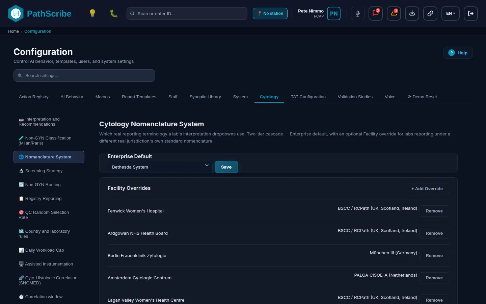
6. Veldreferentie.
| Veldnaam | Gegevenstype / indeling | Verplicht/Optioneel | Beschrijving en bedrijfslogica | Systeemstandaard |
|---|---|---|---|---|
| Bedrijfsstandaard | Keuze: Bethesda, BSCC/RCPath, München III, SFCC (Bethesda met Franse labels), PALGA CISOE-A | Verplicht | Wordt gebruikt door elke faciliteit zonder eigen override. Opslaan schrijft de keuze weg. | Bethesda |
| + Override toevoegen | Knop | Niet van toepassing | Opent een rij om een faciliteit en een systeem te kiezen. | Niet van toepassing |
| Faciliteit (overriderij) | Keuzelijst met faciliteiten | Verplicht | De faciliteit waarvoor de override geldt. | Geen |
| Systeem (overriderij) | Keuze uit dezelfde vijf systemen | Verplicht | Het rapportagesysteem dat die faciliteit gebruikt. | Geen |
| Verwijderen | Rijknop | Niet van toepassing | Verwijdert de override. De faciliteit valt terug op de standaard van de onderneming. | Niet van toepassing |
7. Machtigingen. Openen: screen:configuration:open. Wijzigen: config:cytology-nomenclature:manage (hoog risico, geaudit). Beheerder, Laboratoriumdirecteur en Superadmin hebben deze standaard.
Bekende beperkingen. PALGA CISOE-A kan hier worden gekozen, maar Interpretatie en aanbevelingen heeft er geen categorie-editor voor.
# Interpretatie en aanbevelingen
Status: Gerealiseerd
1. Navigatie: Configuratietabblad Cytologie > zijbalk Interpretatie en aanbevelingen 2. Onderhoudsitem: Interpretatie en aanbevelingen (het categoriewoordenboek voor de cytologie)
3. Doel en reikwijdte. Bevat de categorielijsten waaruit een cytologisch verslag wordt opgebouwd, voor het gekozen nomenclatuursysteem: monsteradequaatheid, algemene categorisering, interpretatie of resultaat, en aanbevelingen. Elk item zegt of een patholoog het vóór de autorisatie moet beoordelen en welke ernst het voorstelt aan de afwijkingsdetectie. De Bethesda-lijst is de hoofdlijst. De SFCC-weergave is een alleen-lezen kopie van Bethesda met de Franse tekst.
4. Vereisten en afhankelijkheden. Stel eerst het te gebruiken systeem in op Nomenclatuursysteem, zodat u de lijst bewerkt die mensen te zien krijgen. De voorgestelde ernst wordt gelezen door de klinische discrepantiecontrole en door de afwijkingsdetectie wanneer een casus wordt geautoriseerd. Slaat u dit scherm over, dan worden de ingebouwde lijsten gebruikt.
5. Scherm.
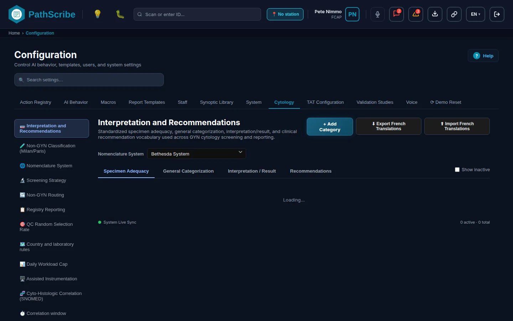
6. Veldreferentie.
Paginabediening
| Veldnaam | Gegevenstype / indeling | Verplicht/Optioneel | Beschrijving en bedrijfslogica | Systeemstandaard |
|---|---|---|---|---|
| Nomenclatuursysteem | Keuze: Bethesda, BSCC/RCPath, München III, SFCC | Verplicht | De lijst die wordt bewerkt. SFCC is alleen-lezen en afgeleid van Bethesda. PALGA CISOE-A wordt hier niet aangeboden. | Bethesda |
| Sectietabbladen | Tabbladen: Monsteradequaatheid, Algemene categorisering, Interpretatie / Resultaat, Aanbevelingen | Verplicht | Elk tabblad is één categorielijst. | Monsteradequaatheid |
| Inactieve tonen | Selectievakje | Optioneel | Neemt gedeactiveerde categorieën mee. | Uit |
| + Categorie toevoegen | Knop | Niet van toepassing | Opent het venster Toevoegen. Verborgen voor SFCC. | Niet van toepassing |
| Franse vertalingen exporteren (CSV) | Knop | Niet van toepassing | Downloadt de Bethesda-lijst met de Franse tekst. De export wordt in het auditlogboek vastgelegd. | Niet van toepassing |
| Franse vertalingen importeren (CSV) | Knop | Niet van toepassing | Leest de Franse tekst terug op basis van het categorie-ID. | Niet van toepassing |
| Chips in de rij | Tekst | Niet van toepassing | Pathologenbeoordeling, de voorgestelde ernst, Inactief en een label "ingebouwd". | Niet van toepassing |
| Deactiveren / Reactiveren | Rijknop | Niet van toepassing | Wijzigt de markering Actief. | Niet van toepassing |
| Bewerken | Rijknop | Niet van toepassing | Opent het venster Bewerken. | Niet van toepassing |
Venster Toevoegen en bewerken
| Veldnaam | Gegevenstype / indeling | Verplicht/Optioneel | Beschrijving en bedrijfslogica | Systeemstandaard |
|---|---|---|---|---|
| Label | Tekst | Verplicht | De categorie zoals die op het verslag staat. | Geen |
| Franse label (SFCC) | Tekst | Optioneel | Alleen Bethesda. Voedt de SFCC-weergave. | Leeg |
| Afkorting | Tekst | Optioneel | Leeg | |
| Groep | Keuze | Optioneel | Alleen op het tabblad Interpretatie / Resultaat. Groepeert het item. | Geen |
| Beschrijving | Vrije tekst | Optioneel | Leeg | |
| Franse beschrijving | Vrije tekst | Optioneel | Alleen Bethesda. | Leeg |
| Vereist pathologenbeoordeling vóór afsluiting | Selectievakje | Optioneel | Een cytotechnoloog kan een casus met alleen deze categorie niet autoriseren. | Uit |
| Voorgestelde ernst van afwijkingsdetectie | Keuze: geen, Afwijkend, Kritiek, Kwaadaardig | Optioneel | Een suggestie aan de afwijkingsdetectie. Een treffer wordt altijd door de patholoog bevestigd of betwist. | Geen |
| Actief | Selectievakje | Optioneel | Aan |
Kaart Beleid voor reactieve veranderingen (alleen Bethesda)
| Veldnaam | Gegevenstype / indeling | Verplicht/Optioneel | Beschrijving en bedrijfslogica | Systeemstandaard |
|---|---|---|---|---|
| Reactieve veranderingen: wie autoriseert | Statustekst: cytotechnoloog, gemengd of patholoog | Niet van toepassing | Toont de huidige instelling voor de items met reactieve veranderingen. | Cytotechnoloog |
| Autorisatie door cytotechnoloog toestaan | Knop | Niet van toepassing | Wist de beoordelingsplicht op de items met reactieve veranderingen (die waarvan het id begint met cyto-nonneo-reactive-). |
Niet van toepassing |
| Patholoog verplichten | Knop | Niet van toepassing | Stelt de beoordelingsplicht in op dezelfde items. Geldt alleen voor nieuwe beoordelingen. | Niet van toepassing |
7. Machtigingen. Openen: screen:configuration:open. Wijzigen, inclusief de twee beleidsknoppen: config:cytology-categories:manage (hoog risico, geaudit). Beheerder, Laboratoriumdirecteur en Superadmin hebben deze standaard.
Bekende beperkingen. Het venster toont drie opgeslagen eigenschappen niet (usage, diagnosticRank en isUnsatisfactory). De import van de Franse CSV koppelt op ID en voegt geen nieuwe categorieën toe.
# Niet-gynaecologische classificatie (Milan/Parijs)
Status: Gerealiseerd
1. Navigatie: Configuratietabblad Cytologie > zijbalk Niet-gynaecologische classificatie (Milan/Parijs) 2. Onderhoudsitem: Niet-gynaecologische classificatie
3. Doel en reikwijdte. Bevat de genummerde diagnostische categorieën van de twee niet-gynaecologische rapportagesystemen: het Milan System (speekselklier) en het Paris System (urinewegen). Elke categorie heeft een nummer, een label en een optioneel maligniteitsrisico.
4. Vereisten en afhankelijkheden. Zelfstandig. De categorieën verschijnen op het niet-gynaecologische cytologieverslag. Slaat u het over, dan worden de ingebouwde categorieën gebruikt.
5. Scherm.

6. Veldreferentie.
Paginabediening
| Veldnaam | Gegevenstype / indeling | Verplicht/Optioneel | Beschrijving en bedrijfslogica | Systeemstandaard |
|---|---|---|---|---|
| Systeemknoppen | Keuze: Milan (speekselklier), Paris urinewegen | Verplicht | De lijst die wordt bewerkt. | Eerste systeem |
| Inactieve tonen | Selectievakje | Optioneel | Uit | |
| + Categorie toevoegen | Knop | Niet van toepassing | Opent het venster Toevoegen. | Niet van toepassing |
| Deactiveren / Reactiveren | Rijknop | Niet van toepassing | Niet van toepassing | |
| Bewerken | Rijknop | Niet van toepassing | Niet van toepassing |
Venster Toevoegen en bewerken
| Veldnaam | Gegevenstype / indeling | Verplicht/Optioneel | Beschrijving en bedrijfslogica | Systeemstandaard |
|---|---|---|---|---|
| Categorienummer | Geheel getal | Verplicht | Het nummer van de categorie in het systeem. | Geen |
| Label | Tekst | Verplicht | Geen | |
| Afkorting | Tekst | Optioneel | Leeg | |
| Beschrijving | Vrije tekst | Optioneel | Leeg | |
| Maligniteitsrisico % | Getal, 0 tot 100 | Optioneel | Wordt naast de categorie getoond. | Leeg |
| Vereist beoordeling door patholoog | Selectievakje | Optioneel | Aan |
7. Machtigingen. Openen: screen:configuration:open. Wijzigen: config:cytology-categories:manage (hoog risico, geaudit), dezelfde machtiging als Interpretatie en aanbevelingen. Beheerder, Laboratoriumdirecteur en Superadmin hebben deze standaard.
Bekende beperkingen. Geen bekend.
# Screeningstrategie
Status: Gerealiseerd
1. Navigatie: Configuratietabblad Cytologie > zijbalk Screeningstrategie 2. Onderhoudsitem: Screeningstrategie
3. Doel en reikwijdte. Stelt in hoe de cervixscreening wordt uitgevoerd (co-testing, HPV eerst of alleen cytologie), voor de onderneming en voor elke faciliteit, en bevat de terugroepperiodes en de terugroeptekst voor Australië en Nieuw-Zeeland.
4. Vereisten en afhankelijkheden. De faciliteitenlijst voor overrides komt uit het Faciliteitenwoordenboek. De kaart met terugroepperiodes wordt opgeslagen binnen de strategie-instellingen, dus dezelfde machtiging geldt.
5. Scherm.

6. Veldreferentie.
Strategie
| Veldnaam | Gegevenstype / indeling | Verplicht/Optioneel | Beschrijving en bedrijfslogica | Systeemstandaard |
|---|---|---|---|---|
| Standaard van de onderneming | Keuze: Co-testing, Primair HPV met reflex naar cytologie, Alleen cytologie | Verplicht | Wordt gebruikt door elke faciliteit zonder override. | Co-testing |
| + Override toevoegen | Knop | Niet van toepassing | Opent een rij om een faciliteit en een strategie te kiezen. | Niet van toepassing |
| Faciliteitsoverride | Keuzelijst plus dezelfde drie keuzes | Verplicht | Geen | |
| Verwijderen | Rijknop | Niet van toepassing | Verwijdert de override. | Niet van toepassing |
Kaart Terugroepperiodes
| Veldnaam | Gegevenstype / indeling | Verplicht/Optioneel | Beschrijving en bedrijfslogica | Systeemstandaard |
|---|---|---|---|---|
| Land | Keuze: Australië, Nieuw-Zeeland | Verplicht | Het land waarvan u de periodes en de tekst bewerkt. De keuze is uitgeschakeld zolang het formulier niet-opgeslagen wijzigingen heeft. | Australië |
| Dringend (HPV 16/18): Van, Tot | Hele weken, 1 tot 52 | Optioneel | Het eerste vak mag niet later zijn dan het tweede. Beide leeg betekent "zo snel als praktisch mogelijk". | 2 tot 4 weken |
| Routine: Van, Tot | Hele weken, 1 tot 52 | Optioneel | Dezelfde regels. | 6 tot 12 weken |
| Herhaalde afname: Van, Tot | Hele weken, 1 tot 52 | Optioneel | Getoond als de periode voor Australië of de periode voor Nieuw-Zeeland, afhankelijk van het gekozen land. | Australië 6 tot 12 weken, Nieuw-Zeeland leeg |
| Taal | Keuze: Engels, Frans, Duits, Nederlands, Koreaans, Spaans | Verplicht | De taal van de tekst die u bewerkt. | Engels |
| Tekst: terugroepen na LBC door clinicus | Vrije tekst, maximaal 1000 tekens | Optioneel | Leeg gebruikt de ingebouwde tekst. Alleen de plaatsaanduidingen {{type}} en {{next}} zijn toegestaan. |
Leeg |
| Tekst: herhaalde afname | Vrije tekst, maximaal 1000 tekens | Optioneel | Leeg gebruikt de ingebouwde tekst. Er zijn geen plaatsaanduidingen toegestaan. | Leeg |
| Opslaan | Knop | Niet van toepassing | Slaat de periodes en de tekst op. Geaudit als RECALL_SETTINGS_CHANGED. |
Niet van toepassing |
| Wijzigingen ongedaan maken | Knop | Niet van toepassing | Zet de kaart terug naar de opgeslagen waarden. | Niet van toepassing |
| Standaardwaarden herstellen | Knop | Niet van toepassing | Zet de ingebouwde periodes terug in het formulier. Selecteer Opslaan om ze te behouden. | Niet van toepassing |
7. Machtigingen. Openen: screen:configuration:open. Wijzigen: config:cytology-screening-strategy:manage (hoog risico, geaudit). Beheerder, Laboratoriumdirecteur en Superadmin hebben deze standaard.
Bekende beperkingen. Een op leeftijd gebaseerde screeningsregel bestaat in de service maar heeft geen scherm. Terugroepperiodes bestaan alleen voor Australië en Nieuw-Zeeland.
# Niet-gynaecologische routering
Status: Gerealiseerd
1. Navigatie: Configuratietabblad Cytologie > zijbalk Niet-gynaecologische routering 2. Onderhoudsitem: Niet-gynaecologische routering
3. Doel en reikwijdte. Bepaalt naar welke werklijst een niet-gynaecologische cytologiecasus gaat: de Werklijst chirurgische pathologie of de Werklijst cytologie. Gynaecologische casus gaan altijd naar de Werklijst cytologie.
4. Vereisten en afhankelijkheden. Overrides gebruiken de faciliteitenlijst uit het Faciliteitenwoordenboek. De niet-GYN-monstercategorie in het Specimenwoordenboek bepaalt op welke casus dit van toepassing is.
5. Scherm.

6. Veldreferentie.
| Veldnaam | Gegevenstype / indeling | Verplicht/Optioneel | Beschrijving en bedrijfslogica | Systeemstandaard |
|---|---|---|---|---|
| Standaard van de onderneming | Keuze: Werklijst chirurgische pathologie, Werklijst cytologie | Verplicht | Waar niet-GYN-casus naartoe gaan, tenzij een faciliteitsoverride geldt. | Werklijst chirurgische pathologie |
| + Override toevoegen | Knop | Niet van toepassing | Opent een rij om een faciliteit en een werklijst te kiezen. | Niet van toepassing |
| Faciliteitsoverride | Keuzelijst plus de twee keuzes | Verplicht | Geen | |
| Verwijderen | Rijknop | Niet van toepassing | Niet van toepassing |
7. Machtigingen. Openen: screen:configuration:open. Wijzigen: config:cytology-routing:manage (hoog risico, geaudit). Beheerder, Laboratoriumdirecteur en Superadmin hebben deze standaard.
Bekende beperkingen. Geen bekend.
# Lands- en laboratoriumregels
Status: Gerealiseerd
1. Navigatie: Configuratietabblad Cytologie > zijbalk Lands- en laboratoriumregels 2. Onderhoudsitem: Lands- en laboratoriumregels
3. Doel en reikwijdte. Schakelt drie landspecifieke cytologiebesturingen aan of uit voor de onderneming en voor elke faciliteit, en bevat de regels voor screeningsintervallen per land. De besturingen doen wat ze zeggen. Ze zorgen er niet uit zichzelf voor dat een laboratorium aan een norm voldoet.
4. Vereisten en afhankelijkheden. Faciliteitsoverrides gebruiken het Faciliteitenwoordenboek. Elke functie die op Automatisch staat, volgt het land van de faciliteit, dus de jurisdictie van de faciliteit moet zijn ingesteld.
5. Scherm.

6. Veldreferentie.
Functies
| Veldnaam | Gegevenstype / indeling | Verplicht/Optioneel | Beschrijving en bedrijfslogica | Systeemstandaard |
|---|---|---|---|---|
| Dagelijks CLIA-werklastmaximum | Keuze: Automatisch, Aan, Uit | Verplicht | Beperkt het aantal preparaten dat een cytotechnoloog per dag screent. Automatisch betekent Aan voor Amerikaanse faciliteiten. | Automatisch |
| CAP-retrospectieve 5-jaarsbeoordeling | Keuze: Automatisch, Aan, Uit | Verplicht | Automatisch betekent Aan voor Amerikaanse faciliteiten. | Automatisch |
| Handtekening voor dringende voorlopige verslagen | Keuze: Automatisch, Aan, Uit | Verplicht | Automatisch betekent dat overal een handtekening vereist is. | Automatisch |
| Faciliteitsoverride | Keuzelijst plus de drie keuzes, per functie | Optioneel | Overschrijft de instelling van de onderneming voor één faciliteit. | Geen |
| Opslaan | Knop | Niet van toepassing | Slaat de functies op. Geaudit. | Niet van toepassing |
Kaart Screeningintervallen
| Veldnaam | Gegevenstype / indeling | Verplicht/Optioneel | Beschrijving en bedrijfslogica | Systeemstandaard |
|---|---|---|---|---|
| Land | Tekst, omgezet in hoofdletters | Verplicht | Bijvoorbeeld GB_EW, FR. | Geen |
| Vanaf leeftijd | Geheel getal, 0 of meer | Verplicht | Begin van de leeftijdsklasse. | 25 op een nieuwe rij |
| Tot leeftijd | Geheel getal, niet lager dan Vanaf leeftijd | Verplicht | Einde van de leeftijdsklasse. | 64 op een nieuwe rij |
| Interval (maanden) | Geheel getal groter dan 0 | Verplicht | Het screeningsinterval voor de klasse. Wordt gebruikt voor de controle op naleving van het interval (EU-QA-01). De coulancetermijn is 3 maanden. | 36 op een nieuwe rij |
| Verwijderen | Rijknop | Niet van toepassing | Niet van toepassing | |
| Regel toevoegen | Knop | Niet van toepassing | Voegt een rij toe. | Niet van toepassing |
| Opslaan | Knop | Niet van toepassing | Een rij zonder land, met een negatieve leeftijd, met een Tot leeftijd lager dan Vanaf leeftijd of met een interval van 0 of lager wordt geweigerd ("invalidRule"). Geaudit als "Screening Intervals Updated". | Niet van toepassing |
7. Machtigingen. Openen: screen:configuration:open. Wijzigen: config:cytology-compliance:manage (hoog risico, geaudit). Beheerder en Superadmin hebben deze standaard. De Laboratoriumdirecteur niet, omdat deze machtiging bij de groep Beheer hoort en niet bij de groep Cytologie.
Bekende beperkingen. Het scherm heeft geen alleen-lezenvergrendeling: wie de machtiging niet heeft, ziet bedieningselementen die bij het opslaan worden geweigerd. De standaard aanwezige intervalregels omvatten GB_EW, FR, DE, NL, BE en IE en zijn voorbeelden om te beoordelen, geen nationaal beleid.
# Ondersteunde instrumentatie
Status: Gerealiseerd
1. Navigatie: Configuratietabblad Cytologie > zijbalk Ondersteunde instrumentatie 2. Onderhoudsitem: Ondersteunde instrumentatie
3. Doel en reikwijdte. Kiest hoe cytotechnologen preparaten beoordelen: op whole slide images of op de traditionele, geleide manier. Bij whole slide imaging toont de casus de actie WSI-preparaat bekijken en de tegel Scans voltooid. Bij de traditionele modaliteit worden geen beeldbedieningen getoond.
4. Vereisten en afhankelijkheden. Overrides gebruiken het Faciliteitenwoordenboek.
5. Scherm.

6. Veldreferentie.
| Veldnaam | Gegevenstype / indeling | Verplicht/Optioneel | Beschrijving en bedrijfslogica | Systeemstandaard |
|---|---|---|---|---|
| Standaard van de onderneming | Keuze: Whole Slide Imaging (WSI), Traditionele geleiding | Verplicht | Whole Slide Imaging | |
| + Override toevoegen | Knop | Niet van toepassing | Niet van toepassing | |
| Faciliteitsoverride | Keuzelijst plus de twee keuzes | Verplicht | Geen | |
| Verwijderen | Rijknop | Niet van toepassing | Niet van toepassing |
7. Machtigingen. Openen: screen:configuration:open. Wijzigen: config:cytology-instrumentation:manage (hoog risico, geaudit). Beheerder, Laboratoriumdirecteur en Superadmin hebben deze standaard.
Bekende beperkingen. Geen bekend.
# Cyto-histologische correlatie (SNOMED)
Status: Gerealiseerd
1. Navigatie: Configuratietabblad Cytologie > zijbalk Cyto-histologische correlatie (SNOMED) 2. Onderhoudsitem: Cyto-histologische correlatie (SNOMED)
3. Doel en reikwijdte. Koppelt SNOMED-codes op cervixhistologie aan een ernstniveau van 0 tot 5, zodat een cytologische uitslag kan worden vergeleken met de biopsie die erop volgde. De lijst bevat standaard vijf synthetische testitems. Vervang ze door uw gelicentieerde codes.
4. Vereisten en afhankelijkheden. De niveaus worden gelezen wanneer een cytologische uitslag wordt vergeleken met de cervixhistologie die erop volgde. Slaat u dit scherm over, dan heeft de vergelijking geen niveaus om te gebruiken. Voor het vervangen van de synthetische testcodes zijn codes uit uw eigen gelicentieerde SNOMED CT-editie nodig.
5. Scherm.
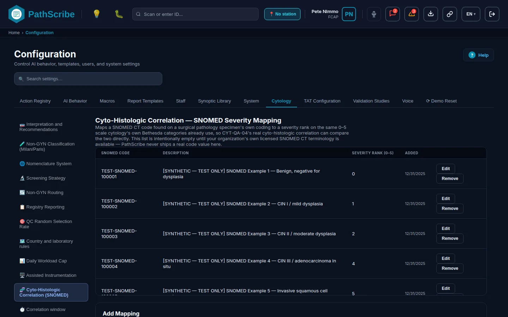
6. Veldreferentie.
| Veldnaam | Gegevenstype / indeling | Verplicht/Optioneel | Beschrijving en bedrijfslogica | Systeemstandaard |
|---|---|---|---|---|
| SNOMED-code | Tekst | Verplicht | Kan na het toevoegen niet meer worden gewijzigd. Een dubbele code wordt geweigerd. | Geen |
| Beschrijving | Tekst | Verplicht | Geen | |
| Ernstrangschikking | Geheel getal, 0 tot 5 | Verplicht | Het vak beperkt de waarde tot 0 tot 5. | Geen |
| Toegevoegd | Datum en gebruiker | Niet van toepassing | Wie de rij heeft toegevoegd en wanneer. | Niet van toepassing |
| Bewerken | Rijknop | Niet van toepassing | Wijzigt alleen de beschrijving en het niveau. | Niet van toepassing |
| Verwijderen | Rijknop | Niet van toepassing | Vraagt om bevestiging en verwijdert dan de rij. | Niet van toepassing |
| Rij toevoegen | Drie vakken en een knop | Niet van toepassing | Dezelfde drie velden als hierboven. | Niet van toepassing |
7. Machtigingen. Openen: screen:configuration:open. Wijzigen: config:cytology-severity-mapping:manage (hoog risico, geaudit). Beheerder, Laboratoriumdirecteur en Superadmin hebben deze standaard.
Bekende beperkingen. De grens van 0 tot 5 wordt alleen door het invoervak afgedwongen. De standaard aanwezige items zijn TEST-SNOMED-100001 tot en met 100005.
# Deel B: Stamwoordenboeken voor monsters en weefseltypen
Dit deel bevat de lijsten die beschrijven wat het laboratorium binnenkomt en hoe dat wordt gevolgd: de monstertypen, de anatomische kaarten, de markeringen van casus en monster, de benoemde fysieke locaties, de koudeketen en de typen tekortkoming.
# Specimenwoordenboek
Status: Gerealiseerd
1. Navigatie: Configuratietabblad Systeem > groep Labmaterialen & workflows 2. Onderhoudsitem: Specimenwoordenboek
3. Doel en reikwijdte. De hoofdlijst van monstertypen. Elk type noemt het type, de ingreep en de anatomische locatie, en bevat de afdeling, het subspecialisme, het verwerkingsprotocol, de standaardkleuringen en een basisfactureringscode. De Specimencategorie stuurt de routering naar werklijsten en het gedrag bij accessie (chirurgisch, GYN-cytologie, niet-GYN-cytologie, autopsie, moleculair, consult). De aanvraagintake vergelijkt de monstertekst op een aanvraag met deze lijst. Een treffer die niet exact is, levert een tekortkoming op.
4. Vereisten en afhankelijkheden. De editor kiest uit drie andere lijsten: Afdeling uit Afdelingen, Subspecialisme uit Subspecialismen en Verwerkingsprotocol uit de actieve protocollen in het Protocolwoordenboek. Slaat u er een over, dan is die keuzelijst leeg en wordt het monstertype zonder die waarde opgeslagen. Het protocol levert ook het cassettetype, en Cassetteroutingregels komen overeen op het protocol, dus een monstertype zonder protocol kan niet overeenkomen met een regel die er een noemt. Standaardkleuringen is gewone tekst en wordt niet getoetst aan de Diagnostische catalogus.
5. Scherm.

6. Veldreferentie.
Lijstpagina
| Veldnaam | Gegevenstype / indeling | Verplicht/Optioneel | Beschrijving en bedrijfslogica | Systeemstandaard |
|---|---|---|---|---|
| Zoeken | Tekst | Optioneel | Leeg | |
| Typefilter | Keuze | Optioneel | Alle | |
| Statusfilter | Keuze | Optioneel | Alle | |
| Kolom Specimen | Tekst | Niet van toepassing | Naam en code. | Niet van toepassing |
| Kolom Type, Procedure, Locatie | Tekst | Niet van toepassing | Niet van toepassing | |
| Kolom Afdeling | Tekst | Niet van toepassing | Niet van toepassing | |
| Kolom Basis-CPT | Tekst | Niet van toepassing | Niet van toepassing | |
| Kolom Protocol | Tekst | Niet van toepassing | Niet van toepassing | |
| Kolom Fixatief vereist | Tekst | Niet van toepassing | Toont of vóór de autorisatie een fixatietijd vereist is. | Niet van toepassing |
| Kolom Status | Tekst | Niet van toepassing | Selecteer de status om te wisselen tussen Actief en Inactief. Er is geen bevestiging. | Niet van toepassing |
| Bewerken, Dupliceren | Rijknoppen | Niet van toepassing | Dupliceren opent een kopie in de editor. | Niet van toepassing |
| Sjabloon downloaden | Knop | Niet van toepassing | Downloadt een CSV met de importkolommen. | Niet van toepassing |
| Spreadsheet uploaden | Knop | Niet van toepassing | Opent het venster Upload controleren (hieronder). | Niet van toepassing |
| + Specimen toevoegen | Knop | Niet van toepassing | Opent de editor met een leeg monstertype. | Niet van toepassing |
Venster Toevoegen en bewerken
| Veldnaam | Gegevenstype / indeling | Verplicht/Optioneel | Beschrijving en bedrijfslogica | Systeemstandaard |
|---|---|---|---|---|
| Naam | Tekst | Verplicht | Geen | |
| Specimencode | Tekst | Optioneel | De sleutel waarop een herimport koppelt. | Leeg |
| Beschrijving | Vrije tekst | Optioneel | Leeg | |
| Type | Tekst of keuze | Verplicht | Bijvoorbeeld Biopsy of Resection. | Geen |
| Procedure | Tekst of keuze | Verplicht | Geen | |
| Specimencategorie | Keuze: geen, SURGICAL_TISSUE, GYN_CYTOLOGY, NON_GYN_CYTOLOGY, AUTOPSY, MOLECULAR, CONSULT, OTHER | Optioneel | Stuurt de routering naar werklijsten en het gedrag bij accessie. | Geen |
| Anatomische locatie | Tekst | Optioneel | Leeg | |
| Lateraliteit | Keuze: Links, Rechts, Bilateraal, Middellijn, Niet van toepassing | Optioneel | Geen | |
| Subspecialisme | Keuzelijst uit Subspecialismen | Optioneel | Geen | |
| Afdeling | Keuzelijst uit Afdelingen | Optioneel | Geen | |
| Synoniemen | Tekst, door komma's gescheiden | Optioneel | Andere namen die de aanvraag kan gebruiken. | Leeg |
| Standaard basis-CPT-code | Tekst | Optioneel | Vrije tekst. | Leeg |
| Standaardkleuringen | Tekst, door komma's gescheiden | Optioneel | Vrije tekst, niet gekoppeld aan het kleuringenwoordenboek. | Leeg |
| Verwerkingsnotities | Vrije tekst | Optioneel | Leeg | |
| Status | Schakelaar Actief / Inactief | Optioneel | Actief | |
| Vereist fixatietijd vóór afsluiting | Schakelaar Ja/Nee | Optioneel | Uit | |
| Verwerkingsprotocol | Keuzelijst met actieve protocollen | Optioneel | Geen |
Venster Upload controleren
| Veldnaam | Gegevenstype / indeling | Verplicht/Optioneel | Beschrijving en bedrijfslogica | Systeemstandaard |
|---|---|---|---|---|
| CSV-kolommen | Name, Description, Subspecialty, SpecimenCode, Type, Procedure, Site, Laterality, Synonyms, Department, RequiresFixativeTime, Active, DefaultStains, ProcessingNotes | Niet van toepassing | Een rij komt overeen met een bestaand monstertype eerst op SpecimenCode en daarna op Name. Subspecialty en Department worden op naam gekoppeld. | Niet van toepassing |
| N rij(en) toepassen | Knop | Niet van toepassing | Schrijft de getoonde rijen weg. | Niet van toepassing |
7. Machtigingen. Openen: screen:configuration:open. Toevoegen, bewerken, importeren, activeren: config:specimen-dictionary:manage (hoog risico, geaudit). Beheerder, Laboratoriumdirecteur en Superadmin hebben deze standaard. Wie haar niet heeft, ziet het scherm alleen-lezen.
Bekende beperkingen. Twee opgeslagen eigenschappen hebben geen veld op het scherm (defaultComplexity en microUpgradeBaseCptCode). Bij opslaan wordt als bewerker "admin" in de registratie vastgelegd, niet de aangemelde persoon. De standaard basis-CPT-code wordt niet getoetst aan het Facturatiewoordenboek.
# Orgaankaarten
Status: Demonstratie
1. Navigatie: Configuratietabblad Systeem > groep Klinische lookups 2. Onderhoudsitem: Orgaankaarten
3. Doel en reikwijdte. De anatomische kaarten die naast een synoptisch verslag worden getoond (prostaatsector- en biopsiekaarten, borstklokvlak, colorectale poliep, rectum- en niersresectie, mondholte, halsklierdissectie, Mohs-stadia) worden altijd getekend op basis van de antwoorden op het synoptische verslag. Een kaart heeft geen eigen gegevens. Dit scherm stelt in hoe de kaarten eruitzien en welke vragen ze voeden. Het heeft twee tabbladen: Kleuren en patronen en Kaartkoppelingen.
4. Vereisten en afhankelijkheden. De bereiklijst op Kleuren en patronen toont de jurisdicties en faciliteiten uit het Faciliteitenwoordenboek. Slaat u dat over, dan kan alleen het niveau van de onderneming worden bewerkt. Kaartkoppelingen tonen de synoptische sjablonen in de Synoptische bibliotheek. De eigen prostaat- en Mohs-kaarten van PathScribe hebben geen koppeling nodig. Een sjabloon dat uw eigen laboratorium heeft geschreven, heeft een koppeling nodig voordat de kaart kan worden getekend.
5. Scherm.
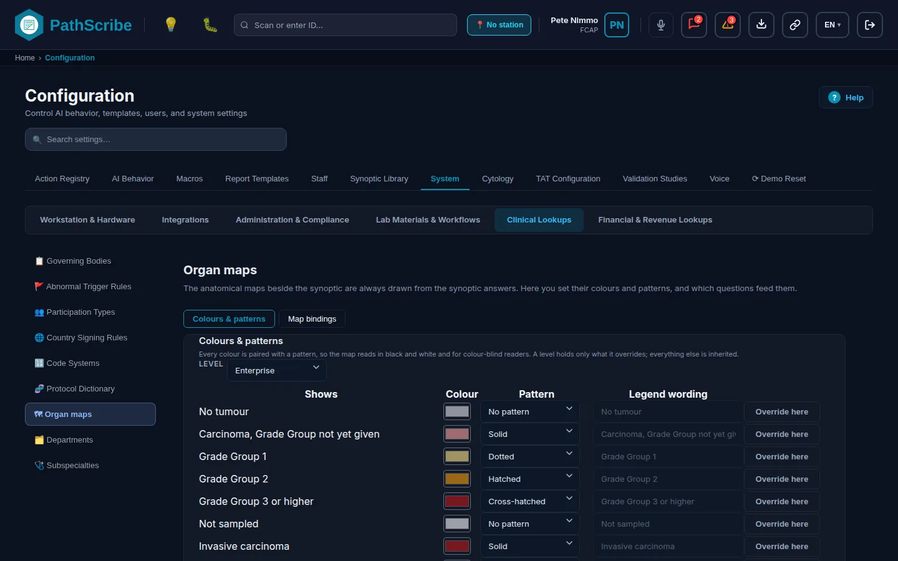
6. Veldreferentie.
Tabblad Kleuren en patronen
| Veldnaam | Gegevenstype / indeling | Verplicht/Optioneel | Beschrijving en bedrijfslogica | Systeemstandaard |
|---|---|---|---|---|
| Niveau | Keuze: Organisatie, Rechtsgebied, Instelling | Verplicht | De laag die u bewerkt. Een faciliteit erft van haar jurisdictie, dan van de onderneming en dan van het ingebouwde schema. Het niveau wijzigen met niet-opgeslagen wijzigingen vraagt eerst om bevestiging. | Organisatie |
| Kies een rechtsgebied, Kies een instelling | Keuzelijst | Verplicht voor die niveaus | De jurisdicties komen uit de eigen jurisdictie van de faciliteiten. | Geen |
| Toont (rijlabel) | Tekst | Niet van toepassing | Eén rij per categorie of omtrek: goedaardig, niet bemonsterd, tumor, Grade Group 1, Grade Group 2, Grade Group 3 of hoger, extraprostatische extensie, positieve snijrand, invasief carcinoom, DCIS, calcificaties, marge vrij, marge krap, marge positief, residuele tumor, perineurale invasie, adenoom, adenoom aan de marge, dysplasie aan de marge, ENE minor, ENE major. | Niet van toepassing |
| Kleur | Kleurkiezer (hex zoals #b91c1c) |
Verplicht bij overschrijven | Ingebouwde kleur | |
| Patroon | Keuze: Effen, Gestippeld, Gearceerd, Kruislings gearceerd, Geen patroon | Verplicht bij overschrijven | Elke kleur is gekoppeld aan een patroon, zodat de kaart in zwart-wit leesbaar is. "Geen patroon" is alleen toegestaan voor goedaardig en niet bemonsterd. | Ingebouwd patroon |
| Legendatekst | Tekst, maximaal 40 tekens | Optioneel | Uw eigen tekst voor de legenda. | Ingebouwde tekst |
| Hier overschrijven / Overgenomen gebruiken | Rijknop | Niet van toepassing | Ontgrendelt of vergrendelt de waarden van de rij op dit niveau. | Overgenomen gebruiken |
| Drempels voor marge en afstand | Zeven rijen, elk een afstand in mm en (voor zes ervan) een vergelijkingsoperator: ≤ kleiner dan of gelijk aan, < kleiner dan, = precies gelijk | Optioneel | Zie de tabel hieronder. Elke rij heeft eigen knoppen Hier overschrijven en Overgenomen gebruiken. | Ingebouwde waarden |
| Voorbeeld | Tekeningen | Niet van toepassing | Toont elke kaart met het conceptschema. | Niet van toepassing |
| Overschrijvingen van dit niveau verwijderen | Knop | Niet van toepassing | Verwijdert de laag. | Niet van toepassing |
| Opslaan | Knop | Niet van toepassing | Slaat de laag op. Wordt met een reden geweigerd als een kleur geen hex is, een patroon ontbreekt, een legendatekst te lang is of een drempel buiten het bereik valt. | Niet van toepassing |
| Drempel | Toegestaan bereik (mm) | Ingebouwde waarde |
|---|---|---|
| Borst: een snijrand is krap onder (geen operator) | 0.1 tot 10 | 2 |
| Maligne poliep: marge aangetast bij | 0 tot 10 | 1, ≤ |
| Rectale CRM: aangetast bij | 0 tot 10 | 1, ≤ |
| Mondholte: marge aangetast bij | 0 tot 10 | 1, < |
| Mondholte: marge krap bij | 0 tot 20 | 5, ≤ |
| Nier, partiële nefrectomie: parenchymmarge aangetast bij | 0 tot 10 | 0, = |
| Nier, radicale nefrectomie: wekedelenmarge aangetast bij | 0 tot 10 | 0, = |
Een laag voor de mondholte waarvan de afstand voor aangetast niet kleiner is dan de afstand voor krap, wordt als conflict vermeld. Zolang dat niet is hersteld, gebruiken de kaarten van die laag de standaardregel voor krap.
Tabblad Kaartkoppelingen
| Veldnaam | Gegevenstype / indeling | Verplicht/Optioneel | Beschrijving en bedrijfslogica | Systeemstandaard |
|---|---|---|---|---|
| Synoptisch sjabloon | Keuzelijst met sjablonen | Verplicht | Het sjabloon dat u koppelt. Een statuslabel toont: PathScribe-kaartvragen, Koppeling van uw lab, Margevragen nakijken of Geen kaart. | Geen |
| Kaart | Keuze uit de negen kaarten | Verplicht | Het kaarttype voor dat sjabloon. | Uit het sjabloon |
| Vraagkiezers | Eén keuzelijst per kaartinvoer, zoals Rastervraag tumorhaarden of Vraag naar de zijde | Verplicht voor de invoer die de kaart nodig heeft | Elke lijst toont de vragen van het sjabloon. "— niet gebruikt —" laat een invoer ongekoppeld. | Niet gebruikt |
| Antwoord en Betekenis op de kaart | Tabel, één rij per antwoord | Verplicht voor elke gekoppelde keuzevraag | Zegt wat elk antwoord op de kaart betekent. Minstens één antwoord moet een betekenis hebben. | Negeren |
| Kiezers voor rasterkolommen | Eén keuzelijst per rasterkolom | Verplicht voor rasterinvoer | Komen overeen met de kolommen van het raster (locatie, % betrokkenheid, Grade Group enzovoort). | Niet gebruikt |
| Algemene margevragen | Kiezers voor margestatus en aangetaste marges, per component | Verplicht voor margekaarten | De eigen margevragen van het formulier volgen die van de kaart en zijn vergrendeld, zodat beide elkaar niet kunnen tegenspreken. Een vraag kan maar één margerol vervullen. | Niet gebruikt |
| Opslaan | Knop | Niet van toepassing | Slaat de koppeling op. | Niet van toepassing |
| Koppeling van uw lab verwijderen | Knop | Niet van toepassing | Verwijdert de koppeling. | Niet van toepassing |
| Opnieuw beginnen | Knop | Niet van toepassing | Zet het concept terug. | Niet van toepassing |
7. Machtigingen. Openen: screen:configuration:open. Kleuren, patronen en drempels wijzigen: config:organ-map-scheme:manage. Koppelingen wijzigen: config:organ-map-bindings:manage. Beide zijn hoog risico en geaudit. Beheerder, Laboratoriumdirecteur en Superadmin hebben beide standaard. Zonder deze machtigingen zijn de knoppen uitgeschakeld.
Bekende beperkingen. De instellingen worden in de browser bewaard en de casuscijfers in het casusdossier. Het API-contract (docs/architecture/ORGAN_MAPPING_API.md) is een specificatie: de servereindpunten zijn nog niet gerealiseerd, en daarom is de status Demonstratie. Een koppeling die is opgeslagen voordat marges per component werden gerapporteerd, wordt niet meer berekend en vraagt u elke margevraag opnieuw toe te wijzen.
# Markeringen
Status: Gerealiseerd
1. Navigatie: Configuratietabblad Systeem > groep Labmaterialen & workflows 2. Onderhoudsitem: Markeringen (paginatitel "Zaak- en monsterlabels")
3. Doel en reikwijdte. Een markering is een label op een casus of op één monster, zoals STAT, Malignant of Confidential, met een ernst van 1 tot 5 en een pictogram. Een markering kan ook het afdrukken van het casusverslag beperken. Markeringen worden ook aangemaakt door imports uit een laboratoriuminformatiesysteem (getoond met een badge "LIS-import").
4. Vereisten en afhankelijkheden. Geen. Voor het beperken van afdrukken is later de machtiging report:restricted-case:print nodig om af te drukken; die wordt ingesteld op het scherm Rollen. Markeringen die automatisch uit een LIS-import zijn aangemaakt, verschijnen in een banner met een knop Beoordelen totdat iemand ze controleert.
5. Scherm.
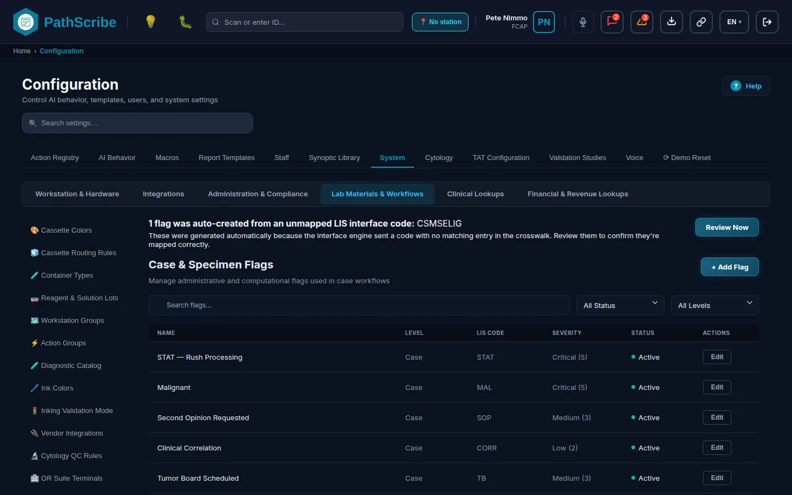
6. Veldreferentie.
Lijstpagina
| Veldnaam | Gegevenstype / indeling | Verplicht/Optioneel | Beschrijving en bedrijfslogica | Systeemstandaard |
|---|---|---|---|---|
| Zoeken | Tekst | Optioneel | Leeg | |
| Statusfilter | Keuze | Optioneel | Alle | |
| Niveaufilter | Keuze: Zaak, Monster | Optioneel | Alle | |
| Kolommen | Naam (met een badge "LIS-import"), Niveau, LIS-code, Ernst, Status, Acties | Niet van toepassing | Niet van toepassing | |
| Banner voor automatisch aangemaakte markeringen en Beoordelen | Banner en knop | Niet van toepassing | Beperkt de lijst tot de markeringen die uit imports zijn aangemaakt. Filter wissen heft dit op. | Niet van toepassing |
Venster Toevoegen en bewerken
| Veldnaam | Gegevenstype / indeling | Verplicht/Optioneel | Beschrijving en bedrijfslogica | Systeemstandaard |
|---|---|---|---|---|
| Naam | Tekst | Verplicht | Geen | |
| Beschrijving | Vrije tekst | Optioneel | Leeg | |
| Niveau | Keuze: Zaak, Monster | Verplicht | Waar de markering kan worden toegepast. | Zaak |
| Ernst | Keuze: 1 Informatief, 2 Laag, 3 Gemiddeld, 4 Hoog, 5 Kritiek | Verplicht | 1 | |
| LIS-code | Tekst | Optioneel | Koppelt de markering bij import aan een LIS-code. | Leeg |
| Pictogram | Keuze: ihc, fish, molecular, flow-cytometry, cytogenetics, micro, coag, generic-lab | Verplicht | generic-lab | |
| Status | Schakelaar Actief / Inactief | Optioneel | Actief | |
| Beperkt afdrukken | Selectievakje | Optioneel | Alleen op casusniveau. Voorkomt dat het verslag wordt afgedrukt door iemand zonder de machtiging report:restricted-case:print. |
Uit |
Elke opslagactie vraagt eerst "Weet u zeker dat u deze wijzigingen wilt toepassen?".
7. Machtigingen. Openen: screen:configuration:open. Toevoegen, bewerken, deactiveren: config:case-flags:manage (hoog risico). Beheerder, Laboratoriumdirecteur en Superadmin hebben deze standaard. Opslaan schrijft de auditgebeurtenissen CONFIG_FLAG_CREATED, CONFIG_FLAG_UPDATED (alleen wijzigingen van naam, beschrijving en LIS-code) en CONFIG_FLAG_DEACTIVATED.
Bekende beperkingen. Eén opgeslagen eigenschap (tagClass) is een overblijfsel van een eerder ontwerp en wordt niet gebruikt. De standaard aanwezige markeringen omvatten STAT, Malignant en Confidential - Restricted Printing.
# Activalocatiewoordenboek
Status: Gerealiseerd
1. Navigatie: Configuratietabblad Systeem > groep Labmaterialen & workflows 2. Onderhoudsitem: Activalocatiewoordenboek
3. Doel en reikwijdte. De beheerde lijst van fysieke locaties (gebouwen, ruimtes, opslageenheden, opslagvakken, werkstations, archiefplanken) waaraan de locatiegeschiedenis van een materiaal wordt getoetst. Een locatie die aan de werkbank wordt getypt en met niets hier overeenkomt, maakt een item met de status Niet geverifieerd aan. Het tabblad Bezetting mortuariumopslag toont welke opslagvakken van het mortuarium nu een autopsiemonster bevatten.
4. Vereisten en afhankelijkheden. Geen. Het tabblad Bezetting toont alleen locaties van het type Opslagvak, dus definieer hier eerst minstens één. Zonder die locaties zegt het tabblad Bezetting "Nog geen echte storage_slot-locaties gedefinieerd".
5. Scherm.
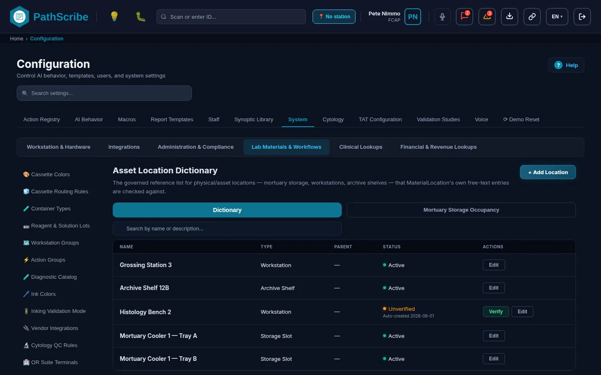
6. Veldreferentie.
Tabblad Woordenboek
| Veldnaam | Gegevenstype / indeling | Verplicht/Optioneel | Beschrijving en bedrijfslogica | Systeemstandaard |
|---|---|---|---|---|
| Zoeken | Tekst | Optioneel | Komt overeen met naam of beschrijving. | Leeg |
| Kolommen | Naam, Type, Bovenliggend, Status, Acties | Niet van toepassing | Een rij met de status Niet geverifieerd toont een notitie over automatisch aanmaken. | Niet van toepassing |
| + Locatie toevoegen | Knop | Niet van toepassing | Niet van toepassing | |
| Verifiëren | Rijknop | Niet van toepassing | Getoond voor rijen met de status Niet geverifieerd. | Niet van toepassing |
| Bewerken | Rijknop | Niet van toepassing | Niet van toepassing |
Venster Toevoegen en bewerken
| Veldnaam | Gegevenstype / indeling | Verplicht/Optioneel | Beschrijving en bedrijfslogica | Systeemstandaard |
|---|---|---|---|---|
| Naam | Tekst | Verplicht | Bijvoorbeeld Mortuariumkoeler 1 - Lade A. | Geen |
| Locatietype | Keuze: Gebouw, Ruimte, Opslageenheid, Opslagvak, Werkstation, Archiefplank, Overig | Verplicht | Alleen Opslagvak verschijnt op het tabblad Bezetting. | Opslagvak |
| Bovenliggende locatie | Keuzelijst met andere locaties | Optioneel | Geen | |
| Beschrijving | Vrije tekst | Optioneel | Leeg | |
| Status | Schakelaar Actief / Inactief | Optioneel | Actief |
Tabblad Bezetting mortuariumopslag
| Veldnaam | Gegevenstype / indeling | Verplicht/Optioneel | Beschrijving en bedrijfslogica | Systeemstandaard |
|---|---|---|---|---|
| Opslagvak | Tekst | Niet van toepassing | Elke locatie van het type Opslagvak. | Niet van toepassing |
| Status | Tekst | Niet van toepassing | Bezet of Beschikbaar, afgeleid uit de locatiegeschiedenis van de monsters van autopsiecasus die u kunt zien. | Niet van toepassing |
7. Machtigingen. Openen: screen:configuration:open. Toevoegen, bewerken, verifiëren: config:asset-locations:manage (hoog risico, geaudit). Beheerder, Laboratoriumdirecteur en Superadmin hebben deze standaard. Wie haar niet heeft, ziet het scherm alleen-lezen.
Bekende beperkingen. Het bezettingsoverzicht leest de casus die uw eigen toegang toestaat, dus twee personen kunnen verschillende resultaten zien. De standaard aanwezige locaties omvatten Grossing Station 3, Archive Shelf 12B, Histology Bench 2 (Niet geverifieerd) en twee opslagvakken van het mortuarium.
# Koudeketen
Status: Gedeeltelijk
1. Navigatie: Configuratietabblad Systeem > groep Labmaterialen & workflows 2. Onderhoudsitem: Koudeketen
3. Doel en reikwijdte. Definieert de temperatuurbereiken (conditietypen) en de koelkasten en vriezers (opslageenheden) waarvan de metingen worden bewaakt, en toont de slimme containers. Een meting buiten het bereik van een eenheid is een afwijking: de batch in een slimme container wordt geblokkeerd en er wordt een tekortkoming "Cold-Chain Excursion" aangemaakt voor beoordeling in CAPA.
4. Vereisten en afhankelijkheden. Een opslageenheid heeft een conditietype nodig, dus maak eerst de typen aan. Er bestaan twee ingebouwde typen (Frozen Tissue, Fresh Tissue). De tekortkoming die een afwijking aanmaakt, gebruikt het ingebouwde type Cold-Chain Excursion op Specimentekortkomingen. Slimme containers worden elders geregistreerd (het hardwareregister van containers) en verschijnen hier alleen-lezen.
5. Scherm.
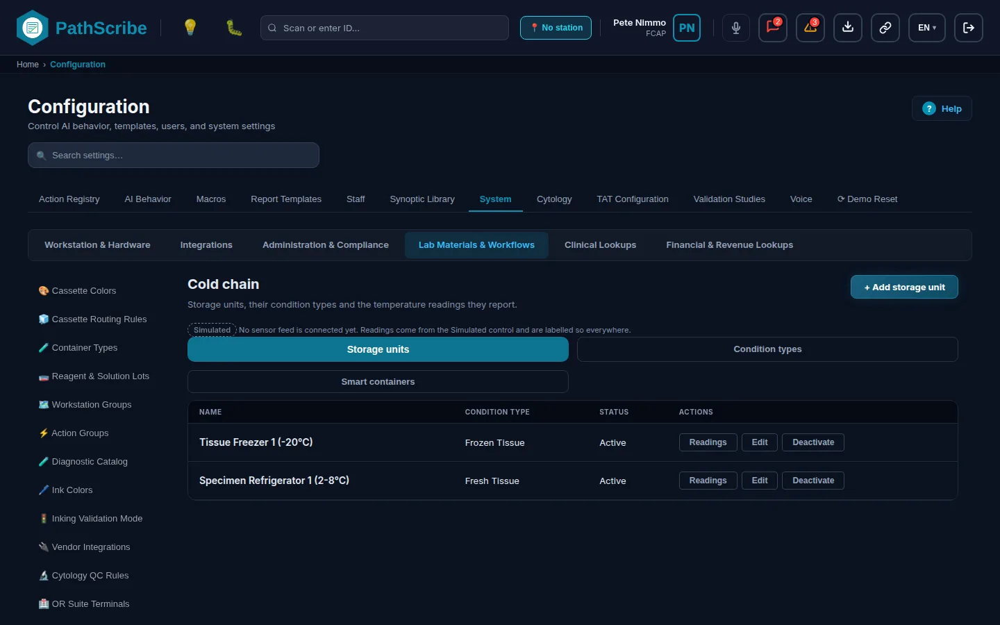
6. Veldreferentie.
Tabblad Opslageenheden
| Veldnaam | Gegevenstype / indeling | Verplicht/Optioneel | Beschrijving en bedrijfslogica | Systeemstandaard |
|---|---|---|---|---|
| Kolommen | Naam, Conditietype, Status, Acties | Niet van toepassing | Niet van toepassing | |
| + Opslageenheid toevoegen | Knop | Niet van toepassing | Niet van toepassing | |
| Metingen | Rijknop | Niet van toepassing | Opent de laatste meting, de aantallen metingen en afwijkingen, een tabel met metingen en het bedieningselement Gesimuleerde meting versturen. | Niet van toepassing |
| Bewerken, Deactiveren, Heractiveren | Rijknoppen | Niet van toepassing | Niet van toepassing |
Venster Opslageenheid toevoegen en bewerken
| Veldnaam | Gegevenstype / indeling | Verplicht/Optioneel | Beschrijving en bedrijfslogica | Systeemstandaard |
|---|---|---|---|---|
| Naam | Tekst | Verplicht | Geen | |
| Conditietype | Keuzelijst met actieve conditietypen | Verplicht | Het bereik waaraan de metingen van de eenheid worden getoetst. | Eerste actieve type |
| Actief | Selectievakje | Optioneel | Aan |
Tabblad Conditietypen
| Veldnaam | Gegevenstype / indeling | Verplicht/Optioneel | Beschrijving en bedrijfslogica | Systeemstandaard |
|---|---|---|---|---|
| Kolommen | Naam, Toegestaan bereik, Status, Acties | Niet van toepassing | Ingebouwde typen zijn gemarkeerd met "Ingebouwd". | Niet van toepassing |
| Verwijderen | Rijknop | Niet van toepassing | Vraagt om bevestiging. Wordt niet aangeboden voor ingebouwde typen. | Niet van toepassing |
Venster Conditietype toevoegen en bewerken
| Veldnaam | Gegevenstype / indeling | Verplicht/Optioneel | Beschrijving en bedrijfslogica | Systeemstandaard |
|---|---|---|---|---|
| Naam | Tekst | Verplicht | Geen | |
| Hoogst toegestaan (°C) | Getal | Verplicht | Een meting erboven is een afwijking. | Geen |
| Laagst toegestaan (°C, optioneel) | Getal onder het hoogste | Optioneel | Laat leeg wanneer alleen een maximum telt, zoals bij een vriezer. | Leeg |
| Actief | Selectievakje | Optioneel | Aan |
Tabblad Slimme containers
| Veldnaam | Gegevenstype / indeling | Verplicht/Optioneel | Beschrijving en bedrijfslogica | Systeemstandaard |
|---|---|---|---|---|
| Container, Conditietype, Huidige batch, Acties | Alleen-lezen kolommen | Niet van toepassing | Alleen containers die als slimme container zijn gemarkeerd, worden getoond. Metingen opent hetzelfde meetpaneel. | Niet van toepassing |
Bedieningselement Gesimuleerde meting versturen
| Veldnaam | Gegevenstype / indeling | Verplicht/Optioneel | Beschrijving en bedrijfslogica | Systeemstandaard |
|---|---|---|---|---|
| Temperatuur (°C) | Getal | Verplicht | Wordt verstuurd via dezelfde verwerking als een sensormeting, gemarkeerd als Gesimuleerd, met "Simulated" in het auditspoor. | Geen |
7. Machtigingen. Openen: screen:configuration:open. Toevoegen, bewerken, deactiveren, verwijderen: config:cold-chain:manage (hoog risico, geaudit). Beheerder, Laboratoriumdirecteur en Superadmin hebben deze standaard. Het versturen van een gesimuleerde meting wordt apart gecontroleerd: wie de machtiging mist, ziet "U mag geen gesimuleerde meting versturen."
Bekende beperkingen. Er is geen sensorfeed verbonden. Elke meting komt van het bedieningselement Gesimuleerd en wordt overal als Gesimuleerd aangeduid. Daarom is de status Gedeeltelijk: de woordenboeken voor eenheden en typen zijn gerealiseerd, de live metingen niet. De standaard aanwezige typen zijn Frozen Tissue (hoogstens -20 °C) en Fresh Tissue (hoogstens 8 °C).
# Specimentekortkomingen
Status: Gerealiseerd
1. Navigatie: Configuratietabblad Systeem > groep Integraties 2. Onderhoudsitem: Specimentekortkomingen (twee tabbladen: Gebrekstypen en Oplossingstypen)
3. Doel en reikwijdte. Een tekortkoming is een vastgelegd probleem met een monster of een casus (een beschadigde container, een onjuist label, een ontbrekend aanvraagformulier). Een oplossingstype zegt hoe het is opgelost. Dit scherm bevat beide lijsten. Sommige typen tekortkoming worden door het systeem zelf aangemaakt, op hun vaste id, bijvoorbeeld Cold-Chain Excursion, Tissue Discrepancy en Block Lost.
4. Vereisten en afhankelijkheden. De keuzelijst Uitvoerend lab gebruikt de uitvoerende laboratoria in het Faciliteitenwoordenboek. Laat u haar op Globaal staan, dan geldt de optie voor elk laboratorium en is de faciliteitenlijst niet nodig.
5. Scherm.

6. Veldreferentie.
Beide tabbladen
| Veldnaam | Gegevenstype / indeling | Verplicht/Optioneel | Beschrijving en bedrijfslogica | Systeemstandaard |
|---|---|---|---|---|
| Labfilter | Keuze: Alle labs, Alleen globaal of een uitvoerend lab | Optioneel | Getoond wanneer er uitvoerende laboratoria bestaan. | Alle labs |
| Kolommen | Gebrekstype of Oplossingstype, Beschrijving, Niveau (alleen op het tabblad Gebrekstypen), Uitvoerend lab, Status, Acties | Niet van toepassing | Niet van toepassing | |
| + Gebrekstype toevoegen, + Oplossingstype toevoegen | Knop | Niet van toepassing | Niet van toepassing | |
| Bewerken, Deactiveren, Activeren | Rijknoppen | Niet van toepassing | Er is geen verwijderfunctie. | Niet van toepassing |
Venster Toevoegen en bewerken
| Veldnaam | Gegevenstype / indeling | Verplicht/Optioneel | Beschrijving en bedrijfslogica | Systeemstandaard |
|---|---|---|---|---|
| Naam | Tekst | Verplicht | Uniek binnen het uitvoerend lab, of binnen Globaal. Een herhaling wordt geweigerd met "bestaat al". | Geen |
| Beschrijving | Vrije tekst | Optioneel | Wordt als hint getoond wanneer iemand de optie selecteert. | Leeg |
| Niveau | Keuze: Monster, Casus/Aanvraag, Beide | Verplicht | Alleen op het tabblad Gebrekstypen. Monster is voor één monster (schade aan de container). Casus/Aanvraag betreft de hele casus (ontbrekende papieren). | Beide |
| Uitvoerend lab | Keuzelijst: Globaal of een uitvoerend lab | Optioneel | Globaal betekent elk uitvoerend lab. | Globaal |
| Status | Schakelaar Actief / Inactief | Optioneel | Actief |
7. Machtigingen. Openen: screen:configuration:open. Toevoegen, bewerken, deactiveren: config:deficiency-types:manage (hoog risico, geaudit). Beheerder, Laboratoriumdirecteur en Superadmin hebben deze standaard.
Bekende beperkingen. Negenentwintig typen tekortkoming en twaalf oplossingstypen zijn standaard aanwezig. Het deactiveren van een type dat het systeem op zijn vaste id aanmaakt, wordt niet geblokkeerd, en deze handleiding heeft niet gecontroleerd wat het systeem dan doet. Dit scherm heeft geen alleen-lezenvergrendeling.
# Deel C: Configuraties voor container-, cassette- en preparaattypen
Dit deel bevat de containers waarin een monster binnenkomt, de cassettekleuren en de regels die een kleur kiezen, en de inktkleuren die op marges worden gebruikt.
Er is geen scherm voor preparaattypen. PathScribe heeft geen woordenboek van preparaattypen en nergens in Configuratie een keuzelijst voor preparaattypen. Wel bestaan het aantal Objectglaasjes bij elke stap van een item in het Protocolwoordenboek (hoeveel preparaten een stap snijdt), de Coupeprotocollen en Macro's voor snel bestellen in de Diagnostische catalogus (niveaus en seriecoupes) en de labelindeling in de Labelontwerper. Het cassettetype, het fysieke formaat van het blok, komt uit het Verwerkingsformaat van het protocol en niet uit een scherm in dit deel.
# Containertypen
Status: Gerealiseerd
1. Navigatie: Configuratietabblad Systeem > groep Labmaterialen & workflows 2. Onderhoudsitem: Containertypen (paginatitel "Containertype-woordenboek")
3. Doel en reikwijdte. De lijst van containerclassificaties die bij de accessie worden gebruikt: een voorgevulde formaline-pot van 20 mL, een droge pot van 60 mL, een emmer van 1 liter, een flacon voor vloeistofcytologie, een buis met RPMI-medium. Elk heeft een categorie, een optionele inhoud, een optioneel standaardfixatief en een markering die zegt of het voorgevuld wordt geleverd. De lijst wordt gekozen op de accessiepagina en in het bewerkvenster van het monster.
4. Vereisten en afhankelijkheden. De keuzelijst Standaardfixatief leest het fixatiefwoordenboek. Dat woordenboek is standaard gevuld (vijftien fixatieven en media) en heeft geen eigen onderhoudsscherm, dus er is niets om eerst in te stellen. Uitvoerend laboratorium gebruikt de uitvoerende laboratoria in het Faciliteitenwoordenboek; laat het op Alle laboratoria staan om die afhankelijkheid te vermijden.
5. Scherm.
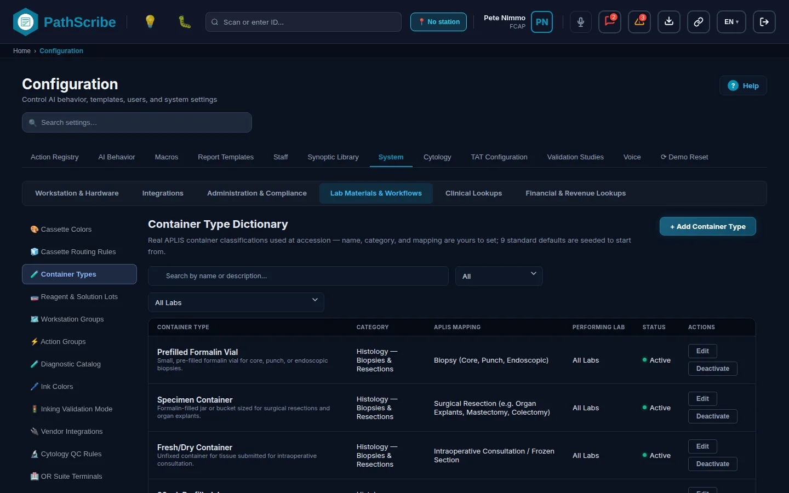
6. Veldreferentie.
Lijstpagina
| Veldnaam | Gegevenstype / indeling | Verplicht/Optioneel | Beschrijving en bedrijfslogica | Systeemstandaard |
|---|---|---|---|---|
| Zoeken | Tekst | Optioneel | Naam of omschrijving. | Leeg |
| Statusfilter | Keuze: Alle, Actief, Inactief | Optioneel | Alle | |
| Labfilter | Keuze: Alle laboratoria, Alleen globaal (geen lab ingesteld) of een lab | Optioneel | Alle laboratoria | |
| Kolommen | Containertype, Categorie, APLIS-mapping, Uitvoerend laboratorium, Status, Acties | Niet van toepassing | Niet van toepassing | |
| + Containertype toevoegen | Knop | Niet van toepassing | Niet van toepassing | |
| Bewerken, Deactiveren, Reactiveren | Rijknoppen | Niet van toepassing | Er is geen verwijderfunctie. | Niet van toepassing |
Venster Toevoegen en bewerken
| Veldnaam | Gegevenstype / indeling | Verplicht/Optioneel | Beschrijving en bedrijfslogica | Systeemstandaard |
|---|---|---|---|---|
| Naam | Tekst | Verplicht | Uniek binnen het uitvoerend laboratorium, of binnen Alle laboratoria. | Geen |
| Omschrijving | Vrije tekst | Optioneel | Werkplekterminologie, merknamen of lokale conventies. | Leeg |
| Categorie | Keuze: Histologie (biopten en resecties), Cytologie (vloeistoffen en uitstrijkjes), Speciaal medium (aanvullende testen) | Verplicht | Histologie | |
| APLIS-mapping | Tekst | Optioneel | Voor welk monstertype de container doorgaans wordt gebruikt. Twee containers kunnen binnen een lab niet dezelfde mapping hebben. | Leeg |
| Capaciteit (mL) | Getal | Optioneel | Laat leeg als de capaciteit varieert of niet relevant is. | Leeg |
| Standaardfixatief | Keuzelijst met actieve fixatieven | Optioneel | "Geen (droog / op de werkplek gevuld)" voor een droge container. | Geen |
| Voorgevuld | Schakelaar Ja/Nee | Optioneel | Ja: wordt voorgevuld geleverd met het bovenstaande fixatief. Nee: gevuld op de werkplek of door de afnemer. | Nee |
| Uitvoerend laboratorium | Keuzelijst: Alle laboratoria of een uitvoerend laboratorium | Optioneel | Alle laboratoria | |
| Systeemlogica-notities | Vrije tekst | Optioneel | Documentatie van het beoogde gedrag. Het doet vandaag niets. | Leeg |
| Status | Schakelaar Actief / Inactief | Optioneel | Actief |
7. Machtigingen. Openen: screen:configuration:open. Toevoegen, bewerken, deactiveren: config:container-types:manage (hoog risico, geaudit). Beheerder, Laboratoriumdirecteur en Superadmin hebben deze standaard. Wie haar niet heeft, ziet het scherm alleen-lezen.
Bekende beperkingen. Systeemlogica-notities is alleen documentatie: niets start een STAT-oproep, een fixatietimer of een factureringsmodifier op grond van een containerkeuze. De lijst met fixatieven kan op geen enkel scherm worden bewerkt. De standaard aanwezige lijst is groter dan de "9 standaardwaarden" die de ondertitel van de pagina noemt.
# Cassettekleuren
Status: Gerealiseerd
1. Navigatie: Configuratietabblad Systeem > groep Labmaterialen & workflows 2. Onderhoudsitem: Cassettekleuren
3. Doel en reikwijdte. Het woordenboek van cassettekleuren. Cassetteroutingregels verwijzen via dit woordenboek naar een kleur, dus een weergavenaam hier hernoemen werkt elke regel bij. Elke kleur heeft ook een eigen terugvalbeleid: wat te doen wanneer de trechter voor die kleur niet beschikbaar is, ofwel automatisch een andere kleur gebruiken, ofwel de technicus waarschuwen.
4. Vereisten en afhankelijkheden. Geen. De keuzelijst Vervangen door toont de andere kleuren, dus er moet eerst een kleur zijn om mee te vervangen.
5. Scherm.
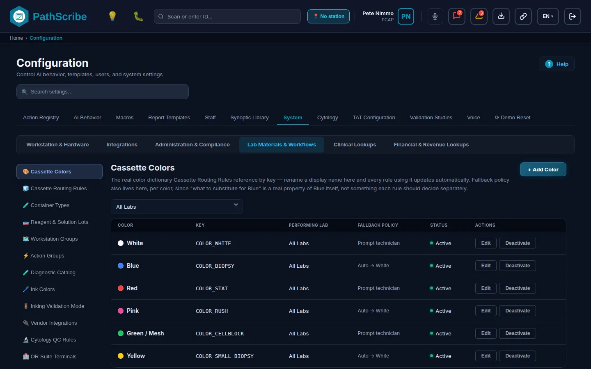
6. Veldreferentie.
Lijstpagina
| Veldnaam | Gegevenstype / indeling | Verplicht/Optioneel | Beschrijving en bedrijfslogica | Systeemstandaard |
|---|---|---|---|---|
| Labfilter | Keuze: Alle laboratoria, Alleen globaal (geen lab ingesteld) of een lab | Optioneel | Alle laboratoria | |
| Kolommen | Kleur, Sleutel, Uitvoerend laboratorium, Terugvalbeleid, Status, Acties | Niet van toepassing | De terugval wordt getoond als "Auto → naam" of "Technicus waarschuwen". | Niet van toepassing |
| + Kleur toevoegen | Knop | Niet van toepassing | Niet van toepassing | |
| Bewerken, Deactiveren, Reactiveren | Rijknoppen | Niet van toepassing | Niet van toepassing |
Venster Toevoegen en bewerken
| Veldnaam | Gegevenstype / indeling | Verplicht/Optioneel | Beschrijving en bedrijfslogica | Systeemstandaard |
|---|---|---|---|---|
| Sleutel | Tekst, omgezet in hoofdletters met spaties omgezet in onderstrepingstekens | Verplicht | De vaste sleutel die naar de graveermachine wordt gestuurd. De weergavenaam later hernoemen breekt hem nooit. Uniek binnen het uitvoerend laboratorium, of binnen Alle laboratoria. | Geen |
| Weergavenaam | Tekst | Verplicht | Uniek binnen het uitvoerend laboratorium, of binnen Alle laboratoria. | Geen |
| Hexcode | Kleurkiezer en tekst, hexcode van 6 tekens zoals #3B82F6 |
Verplicht | Wordt geweigerd als het geen echte hexcode van 6 tekens is. | Geen |
| Als de trechter van deze kleur niet beschikbaar is | Keuze: Automatisch vervangen, Technicus waarschuwen | Verplicht | Technicus waarschuwen | |
| Vervangen door | Keuzelijst met andere kleuren | Verplicht bij Automatisch vervangen | De kleur die in plaats daarvan wordt gebruikt. | Geen |
| Uitvoerend laboratorium | Keuzelijst: Alle laboratoria of een uitvoerend laboratorium | Optioneel | Alle laboratoria | |
| Status | Schakelaar Actief / Inactief | Optioneel | Actief |
7. Machtigingen. Openen: screen:configuration:open. Toevoegen, bewerken, deactiveren: config:cassette-colors:manage (hoog risico, geaudit). Beheerder, Laboratoriumdirecteur en Superadmin hebben deze standaard. Wie haar niet heeft, ziet het scherm alleen-lezen.
Bekende beperkingen. PathScribe bepaalt welke logische kleur een cassette krijgt. Het modelleert geen trechternummers of fysieke bakken. De standaard aanwezige kleuren zijn White, Blue, Red, Pink, Green / Mesh en Yellow. White is standaard ingesteld op Technicus waarschuwen, als het ankerpunt waarop de andere terugvallen.
# Cassetteroutingregels
Status: Gerealiseerd
1. Navigatie: Configuratietabblad Systeem > groep Labmaterialen & workflows 2. Onderhoudsitem: Cassetteroutingregels
3. Doel en reikwijdte. Bepaalt welke cassettekleur een blok krijgt, op grond van het protocol, de prioriteit van de aanvraag, het herkomststation, de aanvragende faciliteit en het casustype. Elke voorwaarde die u instelt, moet overeenkomen. Een voorwaarde die niet is ingesteld, komt met alles overeen, dus een regel zonder voorwaarden is een vangnet. Wanneer meer dan één regel overeenkomt, wint het hoogste prioriteitsgewicht, en bij een gelijkspel wint de eerder aangemaakte regel. Een regel wordt genegeerd buiten de data Geldig vanaf en Geldig tot. Het cassettetype (formaat) wordt hier nooit ingesteld: het komt uit het verwerkingsformaat van het overeenkomende protocol.
4. Vereisten en afhankelijkheden. De keuzelijst voor het protocol leest het Protocolwoordenboek, de keuzelijst voor de kleur leest Cassettekleuren, de keuzelijst voor het herkomststation leest Scanstations en de keuzelijst voor de aanvragende faciliteit leest het Faciliteitenwoordenboek. Slaat u de kleuren over, dan is de lijst Cassettekleur leeg en kan geen regel worden opgeslagen.
5. Scherm.
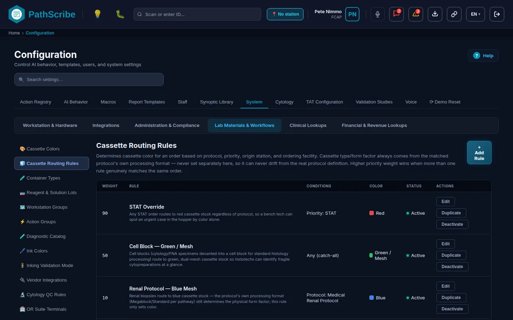
6. Veldreferentie.
Lijstpagina
| Veldnaam | Gegevenstype / indeling | Verplicht/Optioneel | Beschrijving en bedrijfslogica | Systeemstandaard |
|---|---|---|---|---|
| Kolommen | Gewicht, Regel, Voorwaarden, Kleur, Status, Acties | Niet van toepassing | Gesorteerd op gewicht, hoogste eerst. Voorwaarden luiden "Protocol: naam", "Prioriteit: lijst", "Station: naam", "Faciliteit: naam", "Casetype: type" of "Alles (vangnetregel)". | Niet van toepassing |
| + Regel toevoegen | Knop | Niet van toepassing | Niet van toepassing | |
| Bewerken, Dupliceren, Deactiveren, Reactiveren | Rijknoppen | Niet van toepassing | Dupliceren opent een kopie met de naam "naam (kopie)". | Niet van toepassing |
Venster Toevoegen en bewerken
| Veldnaam | Gegevenstype / indeling | Verplicht/Optioneel | Beschrijving en bedrijfslogica | Systeemstandaard |
|---|---|---|---|---|
| Regelnaam | Tekst | Verplicht | Geen | |
| Beschrijving | Vrije tekst | Optioneel | Leeg | |
| Protocol | Keuzelijst: "Elk protocol" of een protocol | Optioneel | Elk protocol | |
| Orderprioriteit | Selectievakjes: Routine, Spoed, STAT | Optioneel | Meer dan één aangevinkt betekent een van die prioriteiten. | Niets aangevinkt |
| Herkomststation | Keuzelijst: "Elk station" of een scanstation | Optioneel | Elk station | |
| Aanvragende faciliteit | Keuzelijst: "Elke faciliteit" of een faciliteit | Optioneel | Elke faciliteit | |
| Casetype | Tekst | Optioneel | Vrije tekst, bijvoorbeeld Consultatie of referentielab. Het moet exact overeenkomen met het casustype van de casus. | Leeg |
| Cassettekleur | Keuzelijst met kleuren | Verplicht | Een inactieve kleur wordt getoond met "(inactief)". | Geen |
| Afdruksjabloonsleutel | Tekst | Optioneel | Een losse sleutel voor een afdrukindeling. | Leeg |
| Prioriteitsgewicht | Geheel getal, 1 tot 100 | Verplicht | Hoger wint wanneer meer dan één regel overeenkomt. | 10 |
| Geldig vanaf | Datum | Optioneel | Leeg | |
| Geldig tot | Datum | Optioneel | Leeg | |
| Status | Schakelaar Actief / Inactief | Optioneel | Actief |
7. Machtigingen. Openen: screen:configuration:open. Toevoegen, bewerken, dupliceren, deactiveren: config:cassette-routing:manage (hoog risico, geaudit). Beheerder, Laboratoriumdirecteur en Superadmin hebben deze standaard. Wie haar niet heeft, ziet het scherm alleen-lezen.
Bekende beperkingen. Een regel kan ook testen of een cytologiemonster een celblok of restvloeistof is (een decanteervoorwaarde), en de standaard aanwezige regel Cell Block gebruikt dit, maar er is geen veld voor in dit venster, dus u kunt het niet instellen op een nieuwe regel. Acht regels zijn standaard aanwezig, waaronder STAT Override, Cell Block, Renal Protocol en vier regels voor kleine biopten.
# Inktkleuren
Status: Gerealiseerd
1. Navigatie: Configuratietabblad Systeem > groep Labmaterialen & workflows 2. Onderhoudsitem: Inktkleuren
3. Doel en reikwijdte. Het kleurenwoordenboek waaraan het aanbrengen van margeinkt bij de autorisatie wordt getoetst en waaruit de margeformulieren en inktformulieren van het uitsnijscherm kiezen.
4. Vereisten en afhankelijkheden. Geen. Slaat u het over, dan is de inktkiezer bij het uitsnijden leeg en heeft de inktcontrole bij de autorisatie niets om tegen te toetsen. Hoe streng die controle is (alleen waarschuwen of strikte handhaving, standaard alleen waarschuwen) wordt per faciliteit ingesteld op een apart scherm, de inktvalidatiemodus.
5. Scherm.

6. Veldreferentie.
| Veldnaam | Gegevenstype / indeling | Verplicht/Optioneel | Beschrijving en bedrijfslogica | Systeemstandaard |
|---|---|---|---|---|
| Kolommen | Kleur, Code, Status, Acties | Niet van toepassing | Niet van toepassing | |
| + Kleur toevoegen | Knop | Niet van toepassing | Niet van toepassing | |
| Bewerken, Deactiveren, Reactiveren | Rijknoppen | Niet van toepassing | Niet van toepassing | |
| Naam | Tekst | Verplicht | Uniek binnen de lijst. | Geen |
| Code | Tekst, zoals #0000FF |
Verplicht | De code die bij de autorisatie wordt getoetst. Uniek binnen de lijst. | Geen |
| Status | Schakelaar Actief / Inactief | Optioneel | Actief |
7. Machtigingen. Openen: screen:configuration:open. Toevoegen, bewerken, deactiveren: config:ink-color:manage (hoog risico, geaudit). Beheerder, Laboratoriumdirecteur en Superadmin hebben deze standaard. Wie haar niet heeft, ziet het scherm alleen-lezen.
Bekende beperkingen. De standaard aanwezige kleuren zijn Black, Blue, Green, Yellow, Orange, Red en Violet. Het codevak is vrije tekst; het scherm toont alleen een kleurvlak wanneer de waarde een hexcode van 6 tekens is.
# Deel D: Stamgegevens voor verwerkingsprotocollen, kleuringen, antilichamen en speciale kleuringen
Dit deel bevat de hoofdlijsten voor alles wat na het uitsnijden met een monster gebeurt: de kleuringen, antilichamen en moleculaire testen, de charges reagens die worden gebruikt en de verwerkingsprotocollen.
Waar antilichamen en speciale kleuringen staan. PathScribe heeft geen apart scherm voor antilichamen en geen apart scherm voor speciale kleuringen. Beide zijn items in de Diagnostische catalogus (het kleuringenwoordenboek), te onderscheiden aan de Categorie: een antilichaam is een item met de categorie IHC (of Immunofluorescentie) dat een Antilichaamkloon en een Leverancier heeft, en een speciale kleuring is een item met de categorie Speciale kleuring. Charges van antilichamen en kits voor speciale kleuringen worden bijgehouden op Reagens- en oplossingslots.
# Diagnostische catalogus
Status: Gerealiseerd
1. Navigatie: Configuratietabblad Systeem > groep Labmaterialen & workflows 2. Onderhoudsitem: Diagnostische catalogus (het kleuringenwoordenboek). Hij heeft vier tabbladen: Diagnostische testen, Coupeprotocollen, Snelbestelmacro's en Hoofddoelen.
3. Doel en reikwijdte. Eén catalogus voor kleuringen (routine, speciaal, immunohistochemie, immunofluorescentie, cytologie), moleculaire testen (FISH, PCR, NGS) en andere testen. Een Diagnostische test is wat wordt aangevraagd. Een Coupeprotocol zegt hoe het blok wordt gesneden (bijvoorbeeld Niveau x 3). De twee zijn met opzet gescheiden. Een Snelbestelmacro zet er van elk een in één bestelsnelkoppeling. Hoofddoelen is de lijst van probes, genen en mutatieregio's waaruit moleculaire testen zijn opgebouwd.
4. Vereisten en afhankelijkheden. De moleculaire velden kiezen uitvoerende laboratoria en referentielaboratoria uit het Faciliteitenwoordenboek. Referentielaboratoria hebben de rol Referentielaboratorium nodig. Factureringscodes worden getypt als de billingCode van een item van het Facturatiewoordenboek, nooit als kale CPT-code, en het Facturatiewoordenboek wordt later ingericht (niveau 7), dus een hier getypte code wordt bij het opslaan niet gecontroleerd. Slaat u de catalogus over, dan heeft het Protocolwoordenboek geen kleuringen om bij een stap te zetten, en heeft Reagens- en oplossingslots er geen om een charge aan te koppelen.
5. Scherm.
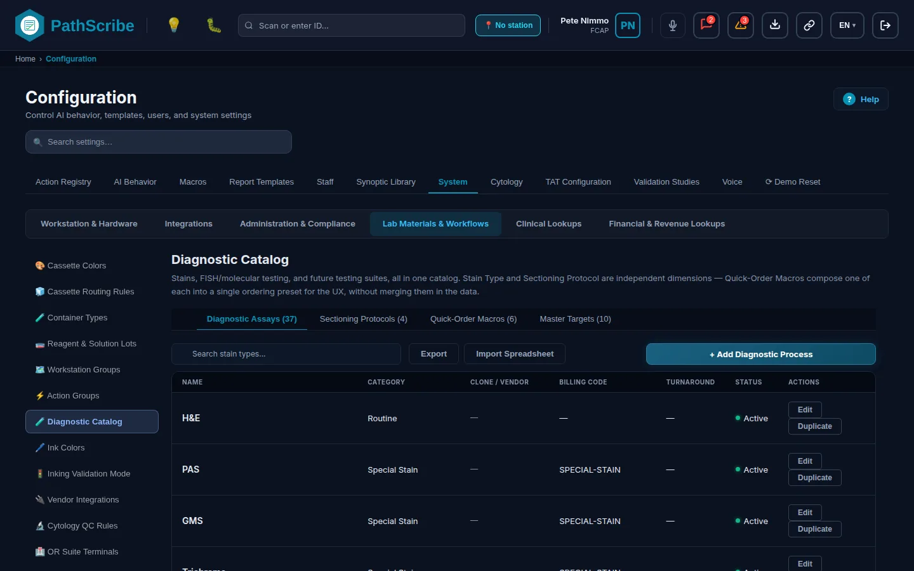
6. Veldreferentie.
Tabblad Diagnostische testen: lijst
| Veldnaam | Gegevenstype / indeling | Verplicht/Optioneel | Beschrijving en bedrijfslogica | Systeemstandaard |
|---|---|---|---|---|
| Zoeken | Tekst | Optioneel | Komt overeen met naam of categorie. | Leeg |
| Kolommen | Naam, Categorie, Kloon / Leverancier, Factuurcode, Doorlooptijd, Status, Acties | Niet van toepassing | Niet van toepassing | |
| Exporteren | Knop | Niet van toepassing | Downloadt StainDictionary.csv met Name, Category, Description, AntibodyClone, Vendor, DefaultTurnaroundHours en Active. De export wordt in het auditlogboek vastgelegd. | Niet van toepassing |
| Spreadsheet importeren | Knop | Niet van toepassing | Leest een CSV met dezelfde kolommen. Een rij komt overeen met een bestaand item op naam, zonder onderscheid tussen hoofdletters en kleine letters. Het voorbeeld zegt "N nieuw, M bij te werken". Import toepassen schrijft ze weg. | Niet van toepassing |
| + Diagnostisch proces toevoegen | Knop | Niet van toepassing | Niet van toepassing | |
| Bewerken, Dupliceren | Rijknoppen | Niet van toepassing | Niet van toepassing |
Venster Diagnostische test
| Veldnaam | Gegevenstype / indeling | Verplicht/Optioneel | Beschrijving en bedrijfslogica | Systeemstandaard |
|---|---|---|---|---|
| Naam | Tekst | Verplicht | Uniek binnen de catalogus. Een herhaling wordt geweigerd. | Geen |
| Categorie | Keuze: Routine, Speciale kleuring, IHC, Immunofluorescentie, Moleculair, Cytologie, Overig | Verplicht | Bepaalt welke van de onderstaande velden worden getoond. | Routine |
| Beschrijving | Vrije tekst | Optioneel | Leeg | |
| Standaard factuurcode | Tekst | Optioneel | De billingCode van een item van het Facturatiewoordenboek. Laat leeg om de generieke regel voor IHC of speciale kleuring te gebruiken. | Leeg |
| Zelfstandige factureringseenheid | Schakelaar Ja/Nee | Optioneel | Alleen IHC met een factureringscode. Uit: de kleuring telt nog mee in de eerste-en-aanvullende IHC-reeks van het monster. Aan: ze neemt geen plaats in de reeks in en wijzigt het aantal niet. | Uit |
| QC-handhavingsmodus na uitvoering | Keuze: geen overschrijving, Afgedwongen, Automatisch oplossen, Hybride | Optioneel | Alleen IHC en speciale kleuring. Overschrijft de instrumentstandaard van de werkstationgroep voor een batch waarin deze kleuring loopt. | Geen overschrijving |
| Doelcontroleglaasje vereisen | Schakelaar Ja/Nee | Optioneel | Alleen IHC en speciale kleuring. Dwingt de QC-poort af bij de autorisatie. | Uit |
| Controleglaasje automatisch toevoegen bij batchcreatie | Schakelaar Ja/Nee | Optioneel | Alleen getoond wanneer een controleglaasje vereist is. | Uit |
| Standaard controleweefsel | Tekst | Optioneel | Alleen getoond wanneer een controleglaasje vereist is. Vult de beschrijving van het controleglaasje in. Wordt nooit gecontroleerd. | Leeg |
| Antilichaamkloon | Tekst | Optioneel | Alleen IHC en Immunofluorescentie. | Leeg |
| Leverancier | Tekst | Optioneel | Alleen IHC en Immunofluorescentie. | Leeg |
| Methodologie | Keuze: Anatomische pathologie FISH, Cytogenetische FISH, Single-gene/gerichte PCR, NGS-panel | Optioneel | Alleen moleculair. | Geen |
| Intern uitgevoerd door | Selectielijst met uitvoerende laboratoria | Optioneel | Alleen moleculair. Een aanvullende aanvraag bij een aangevinkt laboratorium biedt "intern" aan en begint ermee, en de aanvraag gaat naar de orderwachtrij van het Moleculair Werkcentrum. Uitbesteden wordt altijd aangeboden. | Niets aangevinkt |
| Referentielabs goedgekeurd voor deze test | Selectielijst met actieve referentielaboratoria | Optioneel | Alleen moleculair. Een aanvullende aanvraag biedt alleen deze laboratoria aan. Zonder aangevinkte laboratoria wordt elk actief referentielaboratorium aangeboden. | Niets aangevinkt |
| Standaardlab | Keuzelijst met de aangevinkte referentielaboratoria | Optioneel | Alleen moleculair. Wordt ingevuld op een nieuwe aanvullende aanvraag. | Geen standaard |
| Standaarddoelen | Zoekvak en lijst met hoofddoelen | Optioneel | Alleen moleculair. Wordt gekopieerd naar elke nieuwe aanvraag en daar vrij bewerkt. Een wijziging hier verandert nooit een bestaande aanvraag. U kunt ook een nieuw symbool en optioneel detail typen en Toevoegen aan hoofdwoordenboek selecteren. | Geen |
| Factureringsmodel | Keuze: Basis + Add-on (met multiplexdrempel), Multiplicator per eenheid, Vast tarief | Verplicht voor Moleculair | Bepaalt welke van de volgende velden worden getoond. Alleen de velden die het gekozen model gebruikt, worden opgeslagen. | Basis + Add-on |
| Basis billingCode (1e doel) | Tekst | Optioneel | Alleen Basis + Add-on. | Leeg |
| Add-on billingCode (elke aanvullende) | Tekst | Optioneel | Alleen Basis + Add-on. | Leeg |
| Multiplex billingCode | Tekst | Optioneel | Alleen Basis + Add-on. | Leeg |
| Multiplexdrempel | Geheel getal | Optioneel | Alleen Basis + Add-on. | 3 |
| Per-eenheid billingCode | Tekst | Optioneel | Alleen Multiplicator per eenheid. | Leeg |
| Vast-tarief billingCode | Tekst | Optioneel | Alleen Vast tarief. | Leeg |
| Standaard doorlooptijd (uren) | Getal, 0 of meer | Optioneel | Leeg | |
| Status | Schakelaar Actief / Inactief | Optioneel | Actief |
Tabblad Coupeprotocollen
| Veldnaam | Gegevenstype / indeling | Verplicht/Optioneel | Beschrijving en bedrijfslogica | Systeemstandaard |
|---|---|---|---|---|
| Kolommen | Naam, Beschrijving, Status, Acties | Niet van toepassing | Niet van toepassing | |
| + Protocol toevoegen | Knop | Niet van toepassing | Niet van toepassing | |
| Naam | Tekst | Verplicht | Uniek. Een herhaling wordt geweigerd. | Geen |
| Beschrijving | Vrije tekst | Optioneel | Wat de coupe-instructie betekent. | Leeg |
| Status | Schakelaar Actief / Inactief | Optioneel | Actief |
Tabblad Snelbestelmacro's
| Veldnaam | Gegevenstype / indeling | Verplicht/Optioneel | Beschrijving en bedrijfslogica | Systeemstandaard |
|---|---|---|---|---|
| Kolommen | Label, Kleuringstype, Coupeprotocol, Status, Acties | Niet van toepassing | Niet van toepassing | |
| + Macro toevoegen | Knop | Niet van toepassing | Niet van toepassing | |
| Label | Tekst | Verplicht | Bijvoorbeeld "H&E x 3". Uniek. | Geen |
| Kleuringstype | Keuzelijst met diagnostische testen | Verplicht | Eerste test | |
| Coupeprotocol | Keuzelijst met coupeprotocollen | Verplicht | Eerste protocol | |
| Sorteervolgorde | Geheel getal | Optioneel | Waar het in de lijst met snelkoppelingen staat. | 99 |
| Status | Schakelaar Actief / Inactief | Optioneel | Actief |
Tabblad Hoofddoelen
| Veldnaam | Gegevenstype / indeling | Verplicht/Optioneel | Beschrijving en bedrijfslogica | Systeemstandaard |
|---|---|---|---|---|
| Kolommen | Symbool, Type, Detail, Status, Acties | Niet van toepassing | Niet van toepassing | |
| + Doel toevoegen | Knop | Niet van toepassing | Niet van toepassing | |
| Symbool | Tekst | Verplicht | Bijvoorbeeld ERBB2. Een herhaling van hetzelfde symbool en detail wordt geweigerd. | Geen |
| Type | Keuze: Probe (FISH), Gen (NGS), Mutatieregio (PCR) | Verplicht | Probe | |
| Detail | Tekst | Optioneel | Bijvoorbeeld 17q12 (locus) of V600E (mutatie). | Leeg |
| Status | Schakelaar Actief / Inactief | Optioneel | Een inactief doel blijft staan bij items die het al gebruiken, maar wordt niet aangeboden wanneer u zoekt naar een nieuw standaarddoel. | Actief |
7. Machtigingen. Openen: screen:configuration:open. Toevoegen en bewerken op alle vier de tabbladen: config:stain-dictionary:manage (hoog risico, geaudit). Beheerder, Laboratoriumdirecteur en Superadmin hebben deze standaard. Wie haar niet heeft, ziet het scherm alleen-lezen.
Bekende beperkingen. De CSV-import en -export bevatten maar zeven kolommen. Ze bevatten geen velden voor facturering, QC of moleculair, en een import controleert de waarde van Categorie niet aan de lijst. De standaard aanwezige catalogus bevat routinekleuringen en speciale kleuringen, IHC-antilichamen met klonen, immunofluorescentiemarkers, cytologische kleuringen en moleculaire testen.
# Protocolwoordenboek
Status: Gerealiseerd
1. Navigatie: Configuratietabblad Systeem > groep Klinische lookups 2. Onderhoudsitem: Protocolwoordenboek
3. Doel en reikwijdte. Een protocol is een zelfstandige, herbruikbare verwerkingsworkflow. Het is niet aan één monstertype gebonden: u koppelt het via het veld Verwerkingsprotocol in het Specimenwoordenboek, en wijzigingen hier gelden voor elk monstertype dat het gebruikt. Een protocol heeft een of meer trajecten (bijvoorbeeld Lichtmicroscopie, Immunofluorescentie, Elektronenmicroscopie). Elk traject heeft een materiaalsoort (blok of decantatie), een fixatief, een verwerkingsformaat en geordende stappen. Een stap kan preparaten snijden, kleuringen toepassen of een wachtstap zijn. Een protocol kan triage aan de werkbank vereisen, met een checklist.
4. Vereisten en afhankelijkheden. Stappen kiezen kleuringen uit de Diagnostische catalogus. De keuzelijsten voor fixatief en verwerkingsformaat lezen twee vaste woordenboeken zonder onderhoudsscherm (vijftien fixatieven en media, vier formaten: Standard, Megablock, Frozen Block, Resin Grid). Een nieuw protocol neemt het standaardfixatief en het standaardformaat over en begint als decantatietraject wanneer de afdeling een vloeistofafdeling is (Afdelingen). Slaat u de catalogus over, dan is de kleuringskiezer van de stap leeg.
5. Scherm.

6. Veldreferentie.
Lijstpagina
| Veldnaam | Gegevenstype / indeling | Verplicht/Optioneel | Beschrijving en bedrijfslogica | Systeemstandaard |
|---|---|---|---|---|
| Labfilter | Keuze: Alle laboratoria, Alleen globaal (geen laboratorium ingesteld) of een laboratorium | Optioneel | Alle laboratoria | |
| Kolommen | Naam, Uitvoerend laboratorium, Trajecten, Gebruikt door, Triage vereist, Status, Acties | Niet van toepassing | Gebruikt door telt de monstertypen die aan het protocol zijn gekoppeld. | Niet van toepassing |
| Exporteren | Knop | Niet van toepassing | Downloadt de protocollen, één rij per stap. | Niet van toepassing |
| Spreadsheet importeren | Knop | Niet van toepassing | Leest een bestand in de indeling van de export. Het voorbeeld toont kleuringen zonder overeenkomst en ongeldige aantallen. Import toepassen schrijft de protocollen weg. | Niet van toepassing |
| + Protocol toevoegen | Knop | Niet van toepassing | Niet van toepassing | |
| Bewerken, Dupliceren | Rijknoppen | Niet van toepassing | Dupliceren opent "Protocol toevoegen - gekloond van naam". | Niet van toepassing |
Venster Toevoegen en bewerken
| Veldnaam | Gegevenstype / indeling | Verplicht/Optioneel | Beschrijving en bedrijfslogica | Systeemstandaard |
|---|---|---|---|---|
| Naam | Tekst | Verplicht | Uniek binnen het uitvoerend laboratorium, of binnen Alle laboratoria. | Geen |
| Uitvoerend laboratorium | Keuzelijst: Alle laboratoria of een uitvoerend laboratorium | Optioneel | Alle laboratoria | |
| Status | Schakelaar Actief / Inactief | Optioneel | Actief | |
| Beschrijving | Vrije tekst | Optioneel | Waarvoor het dient en welke monstertypen eraan zijn gekoppeld. | Leeg |
| Triage aan de werkbank vereist | Schakelaar Ja/Nee | Optioneel | Niet vereist | |
| Triage-checklist | Lijst met tekststappen | Optioneel | Getoond wanneer triage vereist is. Stap toevoegen en Verwijderen. | Leeg |
| Gebruiksbanner | Tekst | Niet van toepassing | Zegt welke monstertypen aan het protocol zijn gekoppeld, of "Momenteel niet gekoppeld aan een monstertype". | Niet van toepassing |
| Geschiedenis | Lijst met eerdere versies | Niet van toepassing | Weergeven en Deze versie herstellen zetten het protocol terug naar een eerdere versie. | Niet van toepassing |
Traject (minstens één vereist)
| Veldnaam | Gegevenstype / indeling | Verplicht/Optioneel | Beschrijving en bedrijfslogica | Systeemstandaard |
|---|---|---|---|---|
| Naam van het traject | Tekst | Verplicht | Bijvoorbeeld Lichtmicroscopie. | Geen |
| Materiaalsoort | Keuze: Blok (vast weefsel, cassette), Decantatie (vloeistof / cytologie) | Verplicht | Blok | |
| Fixatief | Keuzelijst met fixatieven | Verplicht | Een waarde die niet in het woordenboek staat, toont "(niet in woordenboek)". | Het standaardfixatief |
| Verwerkingsformaat | Keuzelijst met formaten | Verplicht | Het cassettetype. | Het standaardformaat |
| Decalcificatie vereist | Schakelaar Ja/Nee | Optioneel | Uit | |
| Standaardaantal blokken of Standaardaantal decantaties | Geheel getal groter dan 0 | Optioneel | Een leeg vak betekent 1. | Leeg |
| Standaardaantal stukken | Geheel getal groter dan 0 | Optioneel | Alleen bloktrajecten. Wordt geweigerd op een decantatietraject. | Leeg |
| Traject toevoegen, Traject verwijderen | Knoppen | Niet van toepassing | Niet van toepassing |
Stap (binnen een traject)
| Veldnaam | Gegevenstype / indeling | Verplicht/Optioneel | Beschrijving en bedrijfslogica | Systeemstandaard |
|---|---|---|---|---|
| Actie van de stap | Tekst | Optioneel | Bijvoorbeeld Coupe niveau 1, vriescoupe. | Leeg |
| Kleuringen | Zoek- en keuzelijst met diagnostische testen | Optioneel | Zoek op naam of categorie. | Geen |
| Objectglaasjes | Geheel getal | Optioneel | Leeg | |
| Vasthouden | Schakelaar Ja/Nee | Optioneel | Een wachtstap. | Uit |
| Stap toevoegen, Stap verwijderen | Knoppen | Niet van toepassing | Niet van toepassing |
De knop Wijzigingen opslaan is uitgeschakeld totdat de naam, elke trajectnaam en de aantallen van elk traject geldig zijn.
7. Machtigingen. Openen: screen:configuration:open. Toevoegen, bewerken, een versie herstellen: config:processing-protocols:manage (hoog risico, geaudit). Beheerder, Laboratoriumdirecteur en Superadmin hebben deze standaard. Wie haar niet heeft, ziet het scherm alleen-lezen.
Bekende beperkingen. Drie opgeslagen eigenschappen per traject en per stap hebben geen veld op het scherm: een decalcificatieduur, een markering "een uitgaande aanvraag versturen" bij een stap en een lijst met toegestane aanvullende kleuringen. De lijsten met fixatieven en verwerkingsformaten kunnen op geen enkel scherm worden bewerkt. Niet te verwarren met het tabblad Protocollen van de Synoptische bibliotheek (Hoofdstuk 6), dat rapportageprotocollen bevat en geen verwerkingsworkflows.
# Reagens- en oplossingslots
Status: Gerealiseerd
1. Navigatie: Configuratietabblad Systeem > groep Labmaterialen & workflows 2. Onderhoudsitem: Reagens- en oplossingslots (paginatitel "Register van reagens- en oplossingpartijen")
3. Doel en reikwijdte. Een register van reagenscharges met lotnummer, vervaldatum en QC-status. Een charge hoort bij een catalogus-kleuring (een IHC-antilichaam of kit voor speciale kleuring) of bij een van zeven routinereagentia van de H&E-lijn. Wanneer iemand een kleuringsbatch aanmaakt, worden de actieve charges aangeboden om te koppelen.
4. Vereisten en afhankelijkheden. Een charge van een catalogus-kleuring kiest uit de actieve, niet-routine items van de Diagnostische catalogus. Slaat u de catalogus over, dan is de lijst Kleuring leeg. Routinereagentia van de lijn vormen een vaste lijst en vragen niets.
5. Scherm.
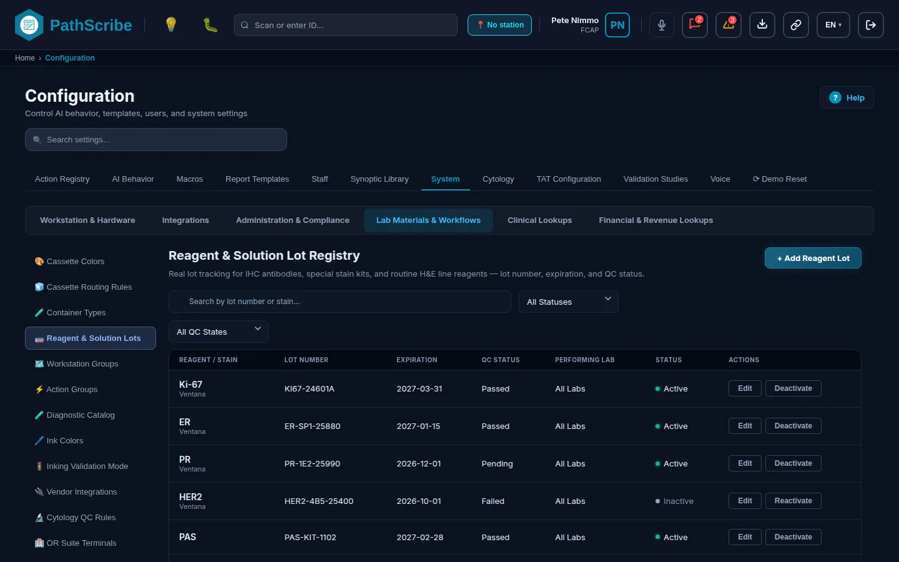
6. Veldreferentie.
Lijstpagina
| Veldnaam | Gegevenstype / indeling | Verplicht/Optioneel | Beschrijving en bedrijfslogica | Systeemstandaard |
|---|---|---|---|---|
| Zoeken | Tekst | Optioneel | Partijnummer of kleuring. | Leeg |
| Statusfilter | Keuze: Alle statussen, Actief, Inactief | Optioneel | Alle statussen | |
| QC-statusfilter | Keuze: Alle QC-statussen, In behandeling, Geslaagd, Mislukt | Optioneel | Alle QC-statussen | |
| Kolommen | Reagens / kleuring, Partijnummer, Vervaldatum, QC-status, Uitvoerend laboratorium, Status, Acties | Niet van toepassing | Niet van toepassing | |
| + Reagenspartij toevoegen | Knop | Niet van toepassing | Niet van toepassing | |
| Bewerken, Deactiveren, Reactiveren | Rijknoppen | Niet van toepassing | Niet van toepassing |
Venster Toevoegen en bewerken
| Veldnaam | Gegevenstype / indeling | Verplicht/Optioneel | Beschrijving en bedrijfslogica | Systeemstandaard |
|---|---|---|---|---|
| Deze partij is voor | Keuze: Catalogus kleuring (IHC / speciaal), Routinematig H&E-lijnreagens | Verplicht | Bepaalt of de volgende keuzelijst Kleuring of Lijnreagens is. | Catalogus kleuring |
| Kleuring | Keuzelijst met actieve, niet-routine catalogusitems | Verplicht voor een catalogus-kleuring | Geen | |
| Lijnreagens | Keuze: Hematoxyline, Eosine, Blauwreagens, Differentiator, Dehydratatiemiddel (alcohol), Verhelderingsmiddel (xyleen), Opsluitmiddel | Verplicht voor een lijnreagens | Geen | |
| Partijnummer | Tekst | Verplicht | Geen | |
| Vervaldatum | Datum | Verplicht | Geen | |
| Ontvangstdatum | Datum | Optioneel | Leeg | |
| Leverancier | Tekst | Optioneel | Leeg | |
| QC-status | Keuze: In behandeling, Geslaagd, Mislukt | Verplicht | In behandeling | |
| Uitvoerend laboratorium | Keuzelijst: Alle laboratoria (gedeelde voorraad) of een uitvoerend laboratorium | Optioneel | Alle laboratoria | |
| Actief | Schakelaar Ja/Nee | Optioneel | Actief |
7. Machtigingen. Openen: screen:configuration:open. Toevoegen, bewerken, deactiveren: config:reagent-lots:manage (hoog risico, geaudit). Beheerder, Laboratoriumdirecteur en Superadmin hebben deze standaard. Wie haar niet heeft, ziet het scherm alleen-lezen.
Bekende beperkingen. Het register legt de QC-status vast. Deze handleiding heeft geen regel gevonden die voorkomt dat een batch een verlopen of afgekeurde charge gebruikt, en het batchvenster toont alleen de actieve charges.
# Deel E: Bibliotheken met diagnosecodes
Dit deel bevat de instellingen voor codesystemen en de diensten die ze doorzoeken. PathScribe bevat zelf de inhoud van SNOMED CT, ICD, ICD-O, LOINC of CPT niet. Elk wordt onderhouden door een eigen normerende instantie en opgezocht via een dienst.
Waar de verwante woordenboeken staan. De lijst met CPT-modifiers is het CPT-modifierwoordenboek en de lijst met kostencodes is het Facturatiewoordenboek. Beide worden beschreven in Hoofdstuk 8, niet hier. Code-import (bulk) hieronder laadt factureringscodes in het Facturatiewoordenboek. Het importeert geen diagnosecodes.
# Codesystemen
Status: Demonstratie
1. Navigatie: Configuratietabblad Systeem > groep Klinische lookups 2. Onderhoudsitem: Codesystemen
3. Doel en reikwijdte. Zegt voor elk land dat u bedient welke codesystemen (ICD-10, ICD-11, ICD-O, SNOMED CT, LOINC, CPT, OPCS-4 en andere) Uit, Optioneel of Verplicht zijn, en vanaf welke datum. Een regio van ICD-10 naar ICD-11 laten overgaan is hier een instelling, geen softwarewijziging. Een tweede kaart, Terminologieën met licentie, legt de licenties voor SNOMED CT en ICD-O-3 vast die uw organisatie bezit. Echte codes die op Regels voor abnormale triggers zijn ingevoerd, worden alleen gebruikt zolang de bijbehorende licentie is ingeschakeld en niet is verlopen. Tot dan worden duidelijk gemarkeerde testcodes gekoppeld.
4. Vereisten en afhankelijkheden. De lijst met landen is de eigen jurisdictie van het laboratorium plus de jurisdictie van elke actieve faciliteit, dus de faciliteiten worden eerst ingericht (Faciliteitenwoordenboek). Slaat u ze over, dan wordt alleen het eigen land van het laboratorium getoond.
5. Scherm.
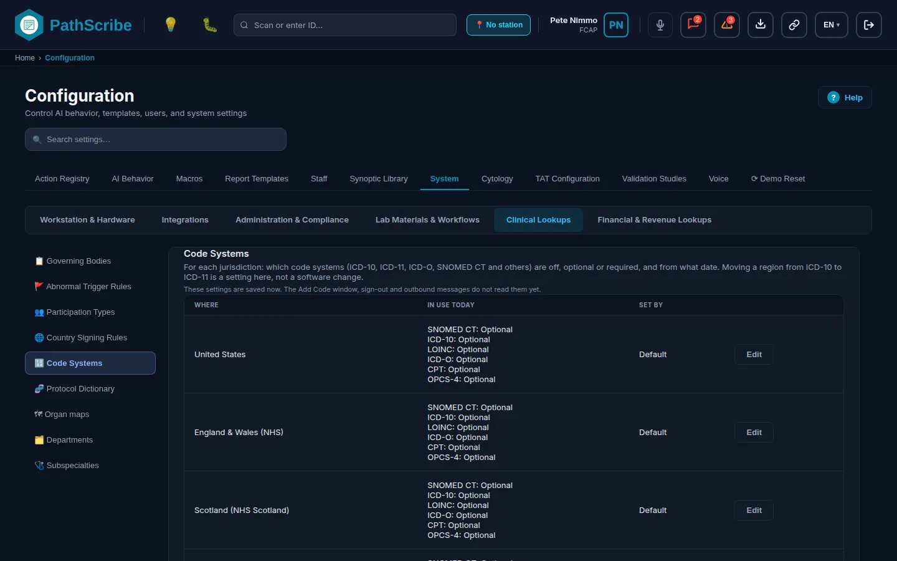
6. Veldreferentie.
Beleidstabel
| Veldnaam | Gegevenstype / indeling | Verplicht/Optioneel | Beschrijving en bedrijfslogica | Systeemstandaard |
|---|---|---|---|---|
| Waar | Tekst | Niet van toepassing | Eén rij per bediend land. | Niet van toepassing |
| Vandaag in gebruik | Tekst | Niet van toepassing | Elk systeem met zijn rol van vandaag, bijvoorbeeld "ICD-10: Optioneel", en "(daarna Verplicht vanaf datum)" wanneer een latere regel bestaat. | Niet van toepassing |
| Ingesteld door | Tekst | Niet van toepassing | "Standaard" of "Hier ingesteld". | Standaard |
| Bewerken | Rijknop | Niet van toepassing | Opent de regeleditor voor dat land. | Niet van toepassing |
| Terugzetten naar standaard | Rijknop | Niet van toepassing | Getoond wanneer er een record bestaat. Verwijdert het. | Niet van toepassing |
Regeleditor
| Veldnaam | Gegevenstype / indeling | Verplicht/Optioneel | Beschrijving en bedrijfslogica | Systeemstandaard |
|---|---|---|---|---|
| Codesysteem | Tekst met suggesties: SNOMED CT, ICD-10, ICD-11, LOINC, ICD-O, CPT, OPCS-4 | Verplicht | Een systeem-id. Een toekomstig systeem kan als gegevens worden getypt. | Geen |
| Rol | Keuze: Uit, Optioneel, Verplicht | Verplicht | Optioneel | |
| Geldt vanaf | Datum | Optioneel | Laat leeg voor een regel die nu geldt. Om een rol later te wijzigen, voegt u een tweede rij toe voor hetzelfde systeem met een begindatum. De laatste rij die is begonnen, geldt. | Leeg |
| Verwijderen | Rijknop | Niet van toepassing | Niet van toepassing | |
| + Regel toevoegen | Knop | Niet van toepassing | Hooguit 40 regels per land. | Niet van toepassing |
| Opslaan | Knop | Niet van toepassing | Wordt geweigerd als er geen regels zijn, een systeem of rol leeg of ongeldig is, een datum niet bestaat, twee rijen voor één systeem dezelfde begindatum hebben of er te veel regels zijn. | Niet van toepassing |
| Annuleren | Knop | Niet van toepassing | Niet van toepassing |
Een land zonder record begint met elk bekend systeem op Optioneel, behalve ICD-11, dat Uit is.
Kaart Terminologieën met licentie
| Veldnaam | Gegevenstype / indeling | Verplicht/Optioneel | Beschrijving en bedrijfslogica | Systeemstandaard |
|---|---|---|---|---|
| Onze organisatie bezit deze licentie: echte codes gebruiken | Selectievakje, één voor SNOMED CT en één voor ICD-O-3 | Optioneel | Schakelt echte codes in. | Uit |
| Licentiehouder | Tekst | Verplicht wanneer het vakje is aangevinkt | Leeg | |
| Editie of release | Tekst | Verplicht wanneer het vakje is aangevinkt | Leeg | |
| Licentie- of overeenkomstnummer | Tekst | Verplicht wanneer het vakje is aangevinkt | Leeg | |
| Laatste geldige dag | Datum | Optioneel | Laat leeg als de licentie niet verloopt. Na deze dag worden weer testcodes gebruikt. | Leeg |
| Statusregel | Tekst | Niet van toepassing | Een van: Licentie ingeschakeld; Licentie verlopen op een datum; Geen licentie vastgelegd; Licentie vastgelegd maar uitgeschakeld. | Niet van toepassing |
| Licenties opslaan | Knop | Niet van toepassing | Wordt met een reden geweigerd als een verplicht vak leeg is of de datum niet bestaat. | Niet van toepassing |
7. Machtigingen. Openen: screen:configuration:open. Het beleid opslaan, bewerken en terugzetten en licenties opslaan: config:code-systems:manage (hoog risico). Beheerder, Laboratoriumdirecteur en Superadmin hebben deze standaard. Elke beleidswijziging wordt geaudit als CODE_SYSTEM_POLICY_CHANGED, met de toestand ervoor en erna.
Bekende beperkingen. De instellingen worden opgeslagen, maar niets leest het beleid nog: het venster Code toevoegen, de autorisatie en uitgaande berichten gebruiken het niet (Gepland, docs/architecture/DIAGNOSIS_CODING.md). Het scherm zegt dat zelf. Het beleid wordt in de browser bewaard totdat de API-server het bevat, en daarom is de status Demonstratie. PathScribe bevat geen inhoud van SNOMED CT of ICD-O-3: de licentie is een overeenkomst tussen uw organisatie en de licentieverlenende instantie.
# Terminologiediensten
Status: Gerealiseerd
1. Navigatie: Configuratietabblad Systeem > groep Integraties 2. Onderhoudsitem: Terminologiediensten
3. Doel en reikwijdte. Een connectiviteitscontrole. Zij bevestigt dat PathScribe de codesystemen kan bereiken die worden gebruikt voor het zoeken naar codes en voor AI-suggesties: SNOMED CT, ICD-10, ICD-11, LOINC, ICD-O en CPT. Hier valt niets toe te voegen of te uploaden. Elk systeem wordt onderhouden door een eigen normerende instantie en wordt binnen PathScribe niet van versies voorzien. De controles lopen wanneer het scherm opent en wanneer u Alles testen selecteert.
4. Vereisten en afhankelijkheden. De juiste ICD-10-variant wordt gekozen uit uw actieve Toezichthoudende organen: ICD-10-CM voor de VS (CAP), ICD-10 WHO voor RCPath en ICCR, en ICD-10-AM voor RCPA. Niet-Amerikaanse varianten en CPT hebben een backend-proxy nodig. Wanneer een adres van de API-server is ingesteld, lopen de opzoekingen voor ICD-10-CM, ICD-11 en LOINC via de server, zoals beschreven in docs/architecture/TERMINOLOGY_PROXY_API.md. SNOMED CT en ICD-O worden gecontroleerd via de UMLS-route van de server.
5. Scherm.
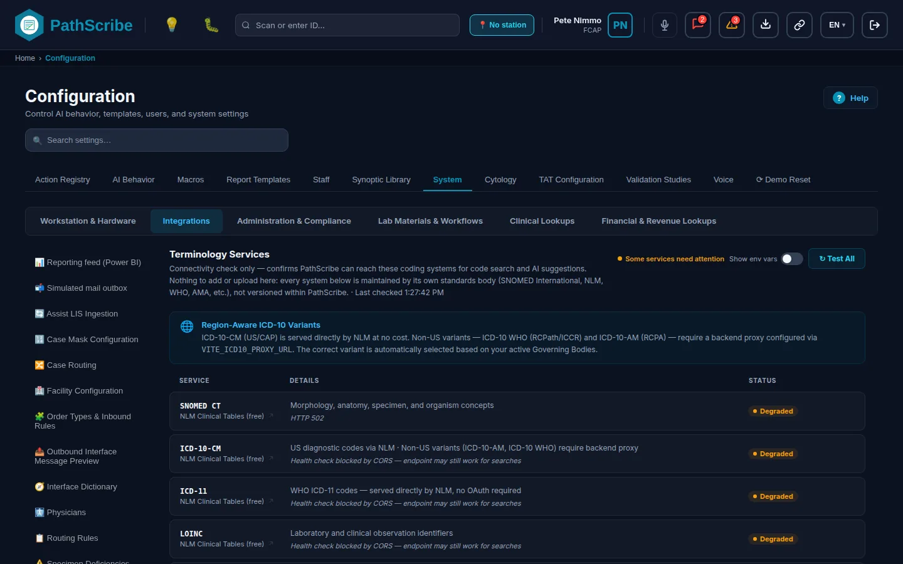
6. Veldreferentie.
| Veldnaam | Gegevenstype / indeling | Verplicht/Optioneel | Beschrijving en bedrijfslogica | Systeemstandaard |
|---|---|---|---|---|
| Algemene status | Tekst | Niet van toepassing | "Alle systemen operationeel" wanneer elke dienst Live of Licentie vereist is. Anders "Sommige diensten hebben aandacht nodig". | Niet van toepassing |
| Laatst gecontroleerd | Tijd | Niet van toepassing | Niet van toepassing | |
| Omgevingsvariabelen tonen | Schakelaar Ja/Nee | Optioneel | Alleen getoond aan een Superadmin. Toont de omgevingsvariabele en de waarde achter elke dienst. | Uit |
| Alles testen | Knop | Niet van toepassing | Voert de controles opnieuw uit. | Niet van toepassing |
| Dienst | Tekst | Niet van toepassing | SNOMED CT, ICD-10-CM, ICD-11, LOINC, ICD-O, CPT. | Niet van toepassing |
| Details | Tekst | Niet van toepassing | Wat de dienst levert en de bron ervan (bijvoorbeeld NLM Clinical Tables, gratis). | Niet van toepassing |
| Status | Tekst | Niet van toepassing | Bezig met controleren, Live, Verminderd, Uitgevallen, Niet geconfigureerd of Licentie vereist. | Niet van toepassing |
| Regioafhankelijke ICD-10-varianten | Melding | Niet van toepassing | Legt de bovenstaande variantkeuze uit. | Niet van toepassing |
| CPT-licentie vereist vóór go-live | Melding | Niet van toepassing | CPT is door de AMA gelicentieerd en kan niet via een openbare API worden aangeboden. Er is een AMA-licentie en een backend-proxy voor nodig. | Niet van toepassing |
7. Machtigingen. Openen: screen:configuration:open. Het scherm wijzigt geen gegevens en heeft geen eigen machtiging. De schakelaar voor omgevingsvariabelen is bedoeld voor een Superadmin.
Bekende beperkingen. Het scherm kan geen systeem toevoegen en geen adres wijzigen. Adressen komen uit de omgevingsvariabelen van de implementatie.
# Code-import (bulk)
Status: Gerealiseerd
1. Navigatie: Configuratietabblad Systeem > groep Financiële en omzet-lookups 2. Onderhoudsitem: Code-import
3. Doel en reikwijdte. Importeert factureringscodes uit een CSV-bestand (CPT, HCPCS, NHS OPCS-4 of lokale laboratoriumcodes) in het Facturatiewoordenboek. Elke import wordt één taak. Een tweede persoon moet de hele taak goedkeuren of afwijzen op In afwachting van goedkeuring facturatieregels. Eerdere versies van een code blijven van kracht tot de ingangsdatum van de nieuwe versie. De pagina heeft drie stappen en een importgeschiedenis.
4. Vereisten en afhankelijkheden. Niets in niveau 2 is eerst nodig. De keuzelijst Locatie toont uw locaties en Organisatiebreed past de codes overal toe. Er verandert niets in het Facturatiewoordenboek totdat een andere persoon de taak goedkeurt, dus houd rekening met een tweede beheerder.
5. Scherm.
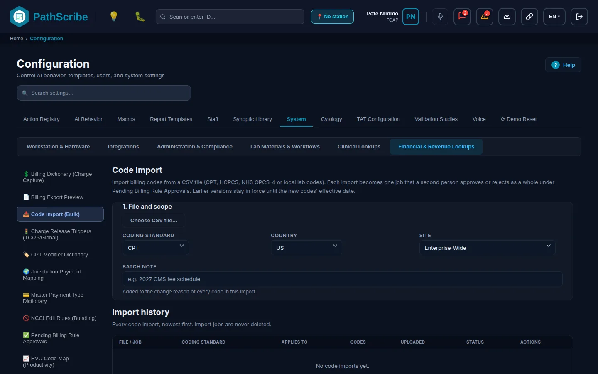
6. Veldreferentie.
Stap 1: Bestand en bereik
| Veldnaam | Gegevenstype / indeling | Verplicht/Optioneel | Beschrijving en bedrijfslogica | Systeemstandaard |
|---|---|---|---|---|
| CSV-bestand kiezen | Bestand | Verplicht | Wordt geweigerd als het geen CSV is, geen kopregel of gegevensrijen heeft, of niet kan worden gelezen. | Geen |
| Coderingsstandaard | Keuze: CPT, HCPCS, Lokale laboratoriumcodes, NHS OPCS-4 | Verplicht | CPT | |
| Land | Keuze gegroepeerd als Operationele landen, Europese Unie, Overig, plus "Alle landen" | Verplicht | Het wijzigen van de standaard vult een land in: US voor CPT en HCPCS, UK voor NHS OPCS-4, leeg voor lokale codes. | US |
| Locatie | Keuzelijst: Organisatiebreed of een locatie | Optioneel | Organisatiebreed | |
| Notitie bij de import | Tekst | Optioneel | Wordt toegevoegd aan de wijzigingsreden van elke code in de import. | Leeg |
Stap 2: Kolommen koppelen
| Veldnaam | Gegevenstype / indeling | Verplicht/Optioneel | Beschrijving en bedrijfslogica | Systeemstandaard |
|---|---|---|---|---|
| Factuurcode | Keuze van een bestandskolom, of "Niet in bestand" | Verplicht | PathScribe suggereert koppelingen op basis van de kolomnamen. Eén kolom kan meer dan één veld vullen: een enkele kolom "Code" geeft vaak zowel de factuurcode als de CPT-code. | Voorgesteld |
| CPT-code | Keuze van een bestandskolom | Verplicht | Voorgesteld | |
| Geldig vanaf | Keuze van een bestandskolom | Verplicht tenzij voor het bestand een datum is opgegeven | Voorgesteld | |
| Omschrijving, Niveau, Factuurtype (TC / 26 / Global), HCPCS-code, Werk-RVU, Praktijkkosten-RVU, Aansprakelijkheids-RVU, Notities | Keuze van een bestandskolom | Optioneel | Voorgesteld | |
| Ingangsdatum voor het hele bestand | Datum | Optioneel | Wordt gebruikt voor rijen zonder eigen datum. Vervangt de kolom Geldig vanaf. | Leeg |
| Niveau als het niet in het bestand staat | Keuze: Afleiden uit de omschrijving, of een niveau | Optioneel | Afleiden uit de omschrijving | |
| Factuurtype als het niet in het bestand staat | Keuze: Technisch (TC), Professioneel (26), Globaal | Optioneel | Globaal | |
| Bestand controleren | Knop | Niet van toepassing | Uitgeschakeld totdat de verplichte velden zijn gekoppeld. | Niet van toepassing |
Stap 3: Controleren en importeren
| Veldnaam | Gegevenstype / indeling | Verplicht/Optioneel | Beschrijving en bedrijfslogica | Systeemstandaard |
|---|---|---|---|---|
| Samenvatting van het voorbeeld | Tekst | Niet van toepassing | Aantallen rijen die kunnen worden geïmporteerd en rijen die zijn geweigerd. | Niet van toepassing |
| Geweigerde rijen | Tabel: Rij, Factuurcode, Reden | Niet van toepassing | Maximaal 50 getoond. Redenen: geen factuurcode, geen CPT-code, een onjuiste of ontbrekende ingangsdatum, een onjuiste RVU-waarde, een herhaling van de factuurcode in het bestand, een niet-herkend factuurtype of niveau, of de code heeft al een versie in concept of in afwachting van goedkeuring. | Niet van toepassing |
| Deze rijen overslaan en de rest importeren | Selectievakje | Optioneel | Geweigerde rijen blokkeren de import tenzij u ze overslaat. | Uit |
| Importknop | Knop | Niet van toepassing | Slaat één taak op die op goedkeuring wacht. | Niet van toepassing |
Importgeschiedenis
| Veldnaam | Gegevenstype / indeling | Verplicht/Optioneel | Beschrijving en bedrijfslogica | Systeemstandaard |
|---|---|---|---|---|
| Kolommen | Bestand / taak, Coderingsstandaard, Geldt voor, Codes, Geüpload, Status, Acties | Niet van toepassing | De status is Wacht op goedkeuring, Goedgekeurd, Afgewezen, Teruggedraaid of Teruggedraaid (sommige codes buiten gebruik). Taken worden nooit verwijderd. | Niet van toepassing |
| Terugdraaien | Rijknop | Niet van toepassing | Alleen goedgekeurde taken. Opent een redenvak. | Niet van toepassing |
| Reden voor terugdraaien | Tekst | Verplicht | Geen | |
| Terugdraaien bevestigen | Knop | Niet van toepassing | Verwijdert de versies die de import heeft toegevoegd. Een versie die kosten al hebben gebruikt, blijft behouden en wordt als buiten gebruik gemarkeerd. Eerdere versies die de import had beëindigd, worden heropend. | Niet van toepassing |
7. Machtigingen. Openen: screen:configuration:open. Importeren en terugdraaien: config:billing-code-import:run (hoog risico, geaudit). Beheerder, Laboratoriumdirecteur en Superadmin hebben deze standaard. Het goedkeuren of afwijzen van een taak gebeurt door een ander persoon op In afwachting van goedkeuring facturatieregels. De persoon die een taak heeft geüpload, kan die niet goedkeuren (vierogenprincipe).
Bekende beperkingen. De import brengt alleen factureringscodes binnen, geen diagnosecodes. Het niveau van een rij die niet in het bestand staat, kan uit de omschrijving worden afgeleid. Een bestand met dezelfde factuurcode twee keer wordt voor die code geweigerd.
# Deel F: Aanvragende artsen, klantaccounts en distributievoorkeuren
Dit deel bevat de personen en organisaties die werk insturen, de doorlooptijd die aan elke klant wordt beloofd, de regels die een uitslag als abnormaal markeren en de normerende instanties die bewaartermijnen vaststellen. Voorkeuren voor de aflevering van verslagen worden ingesteld bij de arts (voorkeurscontact) en op het tabblad Rapportage van de faciliteit, niet op een apart scherm.
# Artsen
Status: Gerealiseerd
1. Navigatie: Configuratietabblad Systeem > groep Integraties 2. Onderhoudsitem: Artsen
3. Doel en reikwijdte. Het register van aanvragende en insturende artsen en hun faciliteitsaffiliaties. Elk heeft een unieke Artscode en, indien aanwezig, een NPI (National Provider Identifier). Contactgegevens, een voorkeurscontactmethode en een sms-geschikt mobiel nummer (alleen gebruikt voor geautomatiseerde sms-berichten bij kritieke waarschuwingen) worden hier bewaard. Een artsnaam die via een aanvraag binnenkomt en met niets overeenkomt, maakt een item met de status Niet geverifieerd aan dat iemand moet controleren.
4. Vereisten en afhankelijkheden. De lijst Instellingsaffiliaties leest het Faciliteitenwoordenboek. Slaat u het over, dan is de lijst leeg en kan een arts niet aan een klant worden gekoppeld.
5. Scherm.
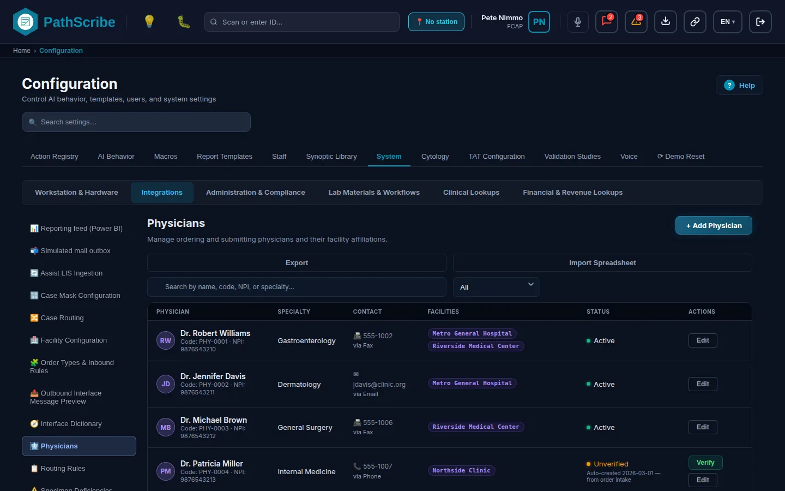
6. Veldreferentie.
Lijstpagina
| Veldnaam | Gegevenstype / indeling | Verplicht/Optioneel | Beschrijving en bedrijfslogica | Systeemstandaard |
|---|---|---|---|---|
| Zoeken | Tekst | Optioneel | Naam, code, NPI of specialisme. | Leeg |
| Statusfilter | Keuze: Alle, Actief, Inactief, Niet geverifieerd | Optioneel | Alle | |
| Kolommen | Arts (met code en NPI), Specialisme, Contact (met voorkeursmethode "via"), Instellingen, Status, Acties | Niet van toepassing | Niet van toepassing | |
| Exporteren | Knop | Niet van toepassing | Downloadt een CSV, inclusief de artscode, NPI, contact, sms, status en faciliteiten. | Niet van toepassing |
| Spreadsheet importeren | Knop | Niet van toepassing | Een rij komt overeen met een bestaande arts eerst op NPI en daarna op Artscode. Een rij met geen van beide krijgt een nieuwe code. Het voorbeeld zegt "N bij te werken, M nieuw" en hoeveel er een nieuwe code kregen. Import toepassen schrijft ze weg. | Niet van toepassing |
| Verifiëren | Rijknop | Niet van toepassing | Getoond voor items met de status Niet geverifieerd. | Niet van toepassing |
| Bewerken | Rijknop | Niet van toepassing | Niet van toepassing |
Venster Toevoegen en bewerken
| Veldnaam | Gegevenstype / indeling | Verplicht/Optioneel | Beschrijving en bedrijfslogica | Systeemstandaard |
|---|---|---|---|---|
| Titel | Keuze: Geen, Dhr., Mevr., Mevr. (Ms.), Mx., Dr. | Optioneel | Geen | |
| Achtervoegsel | Keuze uit voorinstellingen, of Anders | Optioneel | Leeg | |
| Voornaam/-namen | Tekst | Verplicht | Alle voor- en tussennamen. | Geen |
| Achternaam/-namen | Tekst | Verplicht | Geen | |
| Voorkeursnaam | Tekst | Optioneel | Hoe medewerkers deze persoon moeten aanspreken, indien anders. | Leeg |
| Artscode | Tekst | Verplicht | Een interne identificatie, bijvoorbeeld PHY-0231. Uniek binnen het register. Een herhaling wordt geweigerd en noemt de arts die de code heeft. | Geen |
| NPI-nummer | Tekst | Optioneel | Niet elke arts heeft er een. Uniek wanneer opgegeven. Het scherm controleert de indeling van 10 cijfers niet. | Leeg |
| Specialisme | Tekst | Optioneel | Leeg | |
| Telefoon, Fax | Tekst | Optioneel | Leeg | |
| Sms-geschikte mobiel | Tekst | Optioneel | Alleen voor geautomatiseerde sms-berichten bij kritieke waarschuwingen. | Leeg |
| Mobiele provider (VS) | Keuze: Onbekend / niet VS, Verizon, AT&T, T-Mobile, US Cellular, Anders | Optioneel | Wordt gebruikt om het sms-bericht als e-mail naar de gateway van de provider te sturen. | Onbekend / niet VS |
| E-mail-naar-sms-domein van de provider | Tekst | Optioneel | Getoond wanneer de provider Anders is. | Leeg |
| Tekst | Optioneel | Leeg | ||
| Voorkeurscontact | Keuze: E-mail, Fax, Telefoon | Verplicht | ||
| Status | Schakelaar Actief / Inactief | Optioneel | Actief | |
| Instellingsaffiliaties | Zoek- en selectielijst met faciliteiten | Optioneel | Een arts kan aan meerdere faciliteiten zijn gekoppeld. | Niets aangevinkt |
7. Machtigingen. Openen: screen:configuration:open. Toevoegen, bewerken, importeren, verifiëren, deactiveren: config:physicians:manage (hoog risico, geaudit). Beheerder, Laboratoriumdirecteur en Superadmin hebben deze standaard.
Bekende beperkingen. Het scherm heeft geen alleen-lezenvergrendeling voor wie de machtiging niet heeft: de service weigert het opslaan. De standaard aanwezige artsen zijn voorbeeldrecords (vanaf PHY-0001).
# Faciliteitsconfiguratie
Status: Gerealiseerd
1. Navigatie: Configuratietabblad Systeem > groep Integraties > Faciliteitsconfiguratie 2. Onderhoudsitem: Faciliteitsconfiguratie (klantaccounts)
3. Doel en reikwijdte. Een klantaccount is een faciliteit met de rol Externe aanvragende faciliteit (een kliniek, ziekenhuis of praktijk die u monsters stuurt) of de rol Interne aanvragende faciliteit. Dit is hetzelfde scherm, met dezelfde editor, dat Hoofdstuk 2 beschrijft als het Faciliteitenwoordenboek. Alles over de velden, tabbladen en standaardwaarden staat daar, één keer beschreven. Dit onderdeel zegt alleen wat van belang is wanneer u het gebruikt om klanten in te richten.
4. Vereisten en afhankelijkheden. Niets komt eraan vooraf in niveau 2: het is het scherm van niveau 1. Richt eerst uw uitvoerende laboratoria in en daarna elke klant. Klanten voeden drie schermen van niveau 2: Artsen (affiliaties), Serviceniveaus per klant (één niveau per klant, gekoppeld via de Toewijzende instantie) en de faciliteitsoverschrijvingen op de cytologieschermen.
5. Scherm.
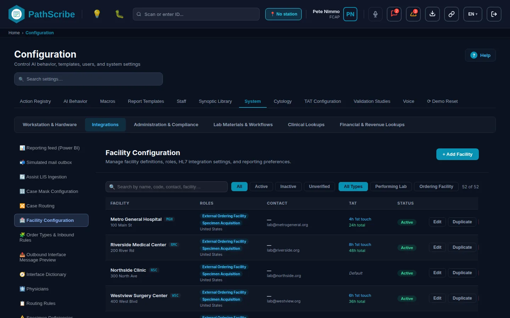
6. Veldreferentie.
| Veldnaam | Gegevenstype / indeling | Verplicht/Optioneel | Beschrijving en bedrijfslogica | Systeemstandaard |
|---|---|---|---|---|
| Lijstpagina: zoeken, status- en rolfilters, kolommen, + Faciliteit toevoegen, Verifiëren, Bewerken, Dupliceren, Deactiveren | Zie Faciliteitenwoordenboek | Niet van toepassing | Dupliceren kopieert de instellingen op organisatieniveau naar een nieuwe faciliteit en wist de identificaties. Een faciliteit die nog in gebruik is deactiveren opent Instelling nog in gebruik en vraagt u dit te bevestigen. | Niet van toepassing |
| Rollen op het tabblad Algemeen | Selectievakjes: Uitvoerend laboratorium, Interne insturende locatie, Interne aanvragende faciliteit, Externe aanvragende faciliteit, Monsterafname, Referentielaboratorium | Verplicht | Een klantaccount is een aanvragende rol. Een referentielaboratorium naar wie u werk stuurt, heeft de rol Referentielaboratorium nodig om op de Diagnostische catalogus te verschijnen. | Externe aanvragende faciliteit |
| Toewijzende instantie op het tabblad Algemeen | Tekst, maximaal 10 tekens | Verplicht | Koppelt inkomende aanvragen aan de klant. Serviceniveaus per klant worden op dezelfde code gekoppeld. | Leeg |
| Editortabbladen | Algemeen, LIS-integratie, Identificatieformaten, Rapportage, Doorlooptijd & escalatie, AI & prestaties, Locaties, Beveiligde berichten, Afdrukken, Spelling | Niet van toepassing | De velden van elk tabblad staan in het Faciliteitenwoordenboek. Locaties, Beveiligde berichten, Afdrukken en Spelling verschijnen nadat de faciliteit voor het eerst is opgeslagen. | Niet van toepassing |
7. Machtigingen. Openen: screen:configuration:open. Toevoegen, bewerken, dupliceren, activeren, deactiveren: config:facilities:manage (hoog risico, geaudit). Admin, Labdirecteur en Superadmin hebben deze standaard. Wie hem niet heeft, ziet het scherm alleen-lezen.
Bekende beperkingen. Hetzelfde scherm staat twee keer in de structuur, onder twee namen. Het is volledig beschreven in Hoofdstuk 2 en wordt hier niet herhaald.
# Serviceniveaus per klant
Status: Gerealiseerd
1. Navigatie: Configuratietabblad Systeem > groep Beheer & compliance 2. Onderhoudsitem: Serviceniveaus per klant
3. Doel en reikwijdte. Legt de doorlooptijd vast die elke klant wordt beloofd: uren tot de eerste aanraking en uren tot het ondertekende verslag, met optioneel kortere STAT-doelen. Casus worden gemeten vanaf het moment van ontvangst. Een casus die na een doel nog openstaat, krijgt een badge op de werklijst. Een leeg STAT-vak gebruikt het routinedoel.
4. Vereisten en afhankelijkheden. De lijst Toevoegen biedt alleen klanten aan die een Toewijzende instantie hebben, niet Inactief zijn en nog geen serviceniveau hebben. Richt eerst de klanten in (Faciliteitsconfiguratie). Slaat u dit over, dan zegt het scherm "Elke klant heeft al een serviceniveau, of er zijn nog geen klanten ingesteld."
5. Scherm.
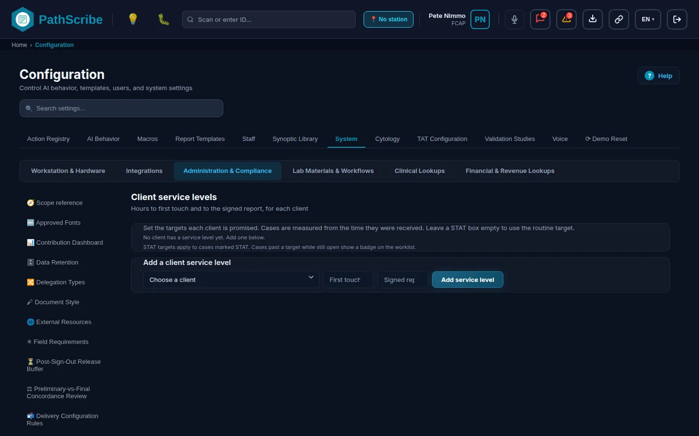
6. Veldreferentie.
Tabel
| Veldnaam | Gegevenstype / indeling | Verplicht/Optioneel | Beschrijving en bedrijfslogica | Systeemstandaard |
|---|---|---|---|---|
| Klant | Tekst | Niet van toepassing | De naam van de klant. | Niet van toepassing |
| Eerste aanraking (uren) | Getal boven 0 | Verplicht | Bewerkt in de tabel. Opgeslagen zodra u het vak verlaat. Mag niet langer zijn dan het ondertekende verslag. | Geen |
| Ondertekend verslag (uren) | Getal boven 0 | Verplicht | Geen | |
| STAT eerste aanraking (uren) | Getal boven 0, of leeg | Optioneel | Leeg toont "Zoals routine". | Leeg |
| STAT ondertekend verslag (uren) | Getal boven 0, of leeg | Optioneel | Leeg toont "Zoals routine". | Leeg |
| Actief | Selectievakje | Optioneel | Aan | |
| Verwijderen | Rijknop | Niet van toepassing | Niet van toepassing |
Een serviceniveau per klant toevoegen
| Veldnaam | Gegevenstype / indeling | Verplicht/Optioneel | Beschrijving en bedrijfslogica | Systeemstandaard |
|---|---|---|---|---|
| Klant | Keuzelijst: "naam (instantie)" | Verplicht | Alleen klanten zonder serviceniveau. | Geen |
| Eerste aanraking (uren) | Getal boven 0 | Verplicht | Geen | |
| Ondertekend verslag (uren) | Getal boven 0 | Verplicht | Geen | |
| Serviceniveau toevoegen | Knop | Niet van toepassing | Wordt met een reden geweigerd als de klant ontbreekt, al een serviceniveau heeft, een doel niet boven 0 ligt of de eerste aanraking langer is dan het ondertekende verslag. | Niet van toepassing |
7. Machtigingen. Openen: screen:configuration:open. Toevoegen, bewerken, verwijderen: config:tat-targets:manage (hoog risico, geaudit), dezelfde machtiging als het tabblad Doorlooptijdconfiguratie. Admin, Labdirecteur en Superadmin hebben deze standaard. Wie hem niet heeft, ziet het scherm alleen-lezen.
Bekende beperkingen. Het scherm heeft een productieservice en een API-contract. Een oudere lijst met hiaten noemt het alleen-browser. Een klant zonder Toewijzende instantie kan geen serviceniveau krijgen.
# Regels voor abnormale triggers
Status: Gerealiseerd
1. Navigatie: Configuratietabblad Systeem > groep Klinische lookups 2. Onderhoudsitem: Regels voor abnormale triggers (paginatitel "Detectie van afwijkingen - Triggerregels met hoog risico")
3. Doel en reikwijdte. Bepaalt welke combinaties van synoptisch veld en waarde een casus markeren als Afwijkend, Kritiek of Kwaadaardig. Een overeenkomst is altijd een suggestie die de patholoog bij de autorisatie bevestigt of betwist, nooit een automatische vaststelling. Een schakelaar bovenaan zet de detectie van afwijkingen uit voor de hele onderneming.
4. Vereisten en afhankelijkheden. Een regel kan echte SNOMED CT- en ICD-O-3-codes bevatten. Die worden alleen gebruikt zolang de bijbehorende licentie is ingeschakeld en niet is verlopen op Codesystemen. Tot dan koppelt PathScribe duidelijk gemarkeerde testcodes. De schakelaar voor de onderneming is een hoofdschakelaar: zolang hij uit staat, kan geen enkele faciliteit de detectie voor zichzelf inschakelen op haar record in het Faciliteitenwoordenboek.
5. Scherm.

6. Veldreferentie.
Paginabediening
| Veldnaam | Gegevenstype / indeling | Verplicht/Optioneel | Beschrijving en bedrijfslogica | Systeemstandaard |
|---|---|---|---|---|
| Organisatiebreed ingeschakeld | Selectievakje | Optioneel | Uit schakelt de detectie van afwijkingen uit voor elke faciliteit. Aan laat elke uitvoerende faciliteit vrij om haar voor zichzelf te beperken. | Uit de configuratie van de onderneming |
| Labfilter | Keuze: Alle labs, Alleen globaal, of een lab | Optioneel | Alle labs | |
| Kolommen | Veldlabel, Triggerwaarde(n), Ernst, Beschrijving, Uitvoerend lab, Status, Acties | Niet van toepassing | Niet van toepassing | |
| + Triggerregel toevoegen | Knop | Niet van toepassing | Niet van toepassing | |
| Bewerken, Dupliceren, Deactiveren, Activeren | Rijknoppen | Niet van toepassing | Niet van toepassing |
Venster Toevoegen en bewerken
| Veldnaam | Gegevenstype / indeling | Verplicht/Optioneel | Beschrijving en bedrijfslogica | Systeemstandaard |
|---|---|---|---|---|
| Synoptisch veldlabel | Tekst | Verplicht | Bijvoorbeeld Margin Status. Moet overeenkomen met het label van de synoptische vraag. Eén regel per label binnen het uitvoerende lab, of binnen Globaal. | Geen |
| Triggerwaarde(n) | Tekst, gescheiden door komma's | Verplicht | Bijvoorbeeld Positive. Minstens één. | Geen |
| Ernst | Keuze: Afwijkend, Kritiek, Kwaadaardig | Verplicht | Afwijkend | |
| Beschrijving | Vrije tekst | Optioneel | Wordt aan de patholoog getoond als reden voor de suggestie. | Leeg |
| SNOMED CT-code | Tekst, 6 tot 18 cijfers | Optioneel | Uit uw gelicentieerde editie. | Leeg |
| SNOMED CT-term | Tekst | Verplicht wanneer een code is opgegeven | De term zoals die in uw editie staat. | Leeg |
| ICD-O-3-code | Tekst in de vorm 8500/3 | Optioneel | Leeg | |
| ICD-O-3-term | Tekst | Verplicht wanneer een code is opgegeven | Leeg | |
| Uitvoerend lab | Keuzelijst: Globaal of een uitvoerend lab | Optioneel | Globaal | |
| Status | Schakelaar Actief / Inactief | Optioneel | Actief |
7. Machtigingen. Openen: screen:configuration:open. Toevoegen, bewerken, deactiveren: config:abnormal-triggers:manage (hoog risico, geaudit). De machtiging hoort bij de groep Kwaliteit. Admin, Labdirecteur en Superadmin hebben deze standaard.
Bekende beperkingen. Het veldlabel van de regel wordt als tekst vergeleken, dus een hernoemde synoptische vraag komt niet meer overeen. De schakelaar voor de onderneming slaat de configuratie van de onderneming op. Er zijn vier regels meegeleverd: Margin Status Positive, Perineural Invasion Present, Lymph Node Status Positive en Lymphovascular Invasion Present.
# [FORMEDRIXAI INTERNAL ONLY] Toezichthoudende instanties
🔒 Beperkte interne instelling van ForMedrixAI Reikwijdte: Alleen intern service- en implementatiepersoneel. Toelichting: Deze lijst bepaalt welke normerende instanties gelden en hoe lang elke instantie zegt dat materiaal moet worden bewaard. De bewaarcijfers die zij bevat zijn de ondergrens waaraan de bewaartermijnafwijking van elke afdeling wordt getoetst, en zij voeden de bewaarklok op opgeslagen blokken, preparaten en nat weefsel. Een wijziging door een eindgebruiker kan een wettelijke bewaartermijn verkorten of een instantie inschakelen die niet geldt voor het land van het laboratorium. Bewerken vereist daarom de platformmachtiging
platform:governing-bodies:manage, die alleen Superadmin heeft. Iedereen anders ziet de lijst alleen-lezen met de melding "Toegang als super-admin vereist".
Status: Gerealiseerd
1. Navigatie: Configuratietabblad Systeem > groep Klinische lookups 2. Onderhoudsitem: Toezichthoudende organen
3. Doel en reikwijdte. Een toezichthoudende instantie is een normerende of regelgevende instantie, zoals CAP, RCPath, ICCR, RCPA, CAP-ACP, de EU (ISO 15189) of de Koreaanse MSA. Elke instantie is ingeschakeld of uitgeschakeld, dekt enkele rechtsgebieden en bevat een alleen-toevoegen-geschiedenis van bewaarcijfers (dagen voor blokken, preparaten en nat weefsel). Een bewaarcijfer wordt alleen gebruikt van een ingeschakelde instantie met minstens één versie die het rechtsgebied dekt. Aangepaste instanties kunnen worden toegevoegd.
4. Vereisten en afhankelijkheden. Dit is een startpunt. Zonder bewaarversie bij een ingeschakelde instantie voor het rechtsgebied van het laboratorium is er geen bewaarondergrens, dus wordt de bewaarafwijking van een afdeling niet getoetst. Afdelingen lezen de lijst (Afdelingen). De ICD-10-variant op Terminologiediensten volgt de actieve instanties.
5. Scherm.
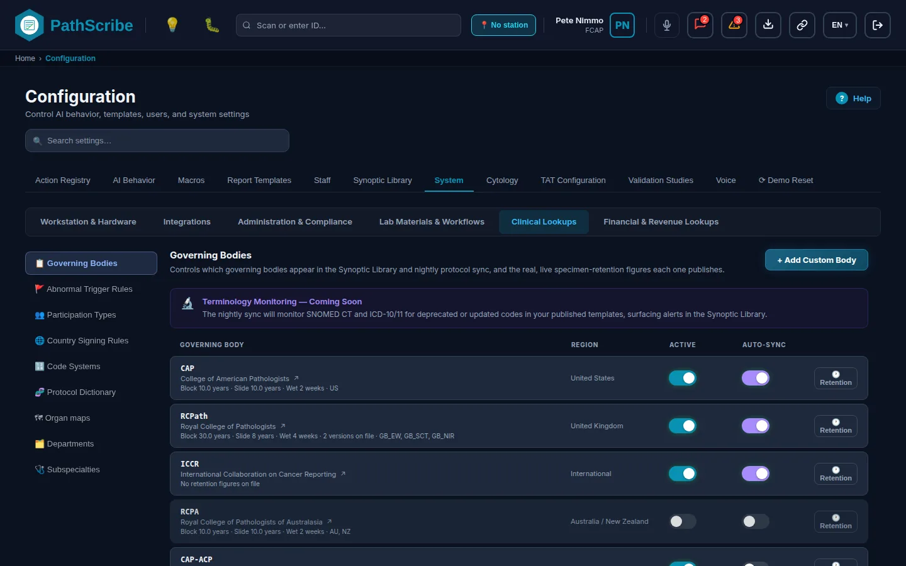
6. Veldreferentie.
Lijstpagina
| Veldnaam | Gegevenstype / indeling | Verplicht/Optioneel | Beschrijving en bedrijfslogica | Systeemstandaard |
|---|---|---|---|---|
| Toezichthoudende instantie | Tekst | Niet van toepassing | Afkorting en naam. | Niet van toepassing |
| Regio | Tekst | Niet van toepassing | De rechtsgebieden die de instantie dekt. | Niet van toepassing |
| Actief | Ja/nee-schakelaar | Optioneel | Een inactieve instantie geeft geen bewaarcijfer en wordt genegeerd door het rechtsgebiedoverzicht. | Zie de meegeleverde waarden hieronder |
| Automatische synchronisatie | Ja/nee-schakelaar | Optioneel | Uitgeschakeld zolang de instantie niet Actief is. Opgeslagen, maar niets leest hem nog. | Zie de meegeleverde waarden hieronder |
| Bewaring, Bewerken, verwijderen (✕) | Rijknoppen | Niet van toepassing | Bewaring opent het bewaarvenster. Alleen aangepaste instanties kunnen worden bewerkt of verwijderd. | Niet van toepassing |
| Aangepaste instantie toevoegen | Knop | Niet van toepassing | Alleen getoond na een wijziging. | Niet van toepassing |
| Wijzigingen opslaan | Knop | Niet van toepassing | Alleen getoond na een wijziging, naast de markering "Niet-opgeslagen wijzigingen". | Niet van toepassing |
| Terminologiebewaking - binnenkort beschikbaar | Melding | Niet van toepassing | Een nachtelijke synchronisatie van SNOMED CT- en ICD-inhoud is Gepland. | Niet van toepassing |
Venster Aangepaste instantie
| Veldnaam | Gegevenstype / indeling | Verplicht/Optioneel | Beschrijving en bedrijfslogica | Systeemstandaard |
|---|---|---|---|---|
| Afkorting | Tekst | Verplicht | Wordt in hoofdletters de id van de instantie. Kan later niet worden gewijzigd. Een conflict met een bestaande id wordt geweigerd. | Geen |
| Volledige naam | Tekst | Verplicht | Geen | |
| Regio | Tekst | Optioneel | Leeg | |
| Website | Tekst | Optioneel | Leeg |
Een aangepaste instantie begint ingeschakeld met Automatische synchronisatie uit.
Bewaarvenster
| Veldnaam | Gegevenstype / indeling | Verplicht/Optioneel | Beschrijving en bedrijfslogica | Systeemstandaard |
|---|---|---|---|---|
| Geldt voor rechtsgebieden | Chips: US, CA, GB_EW, GB_SCT, GB_NIR, IE, AU, NZ, KR, BE, NL, DE, FR, ES | Optioneel | De rechtsgebieden die de instantie dekt. Rechtsgebieden opslaan bewaart de wijziging. | Per instantie |
| Versiegeschiedenis | Lijst v1, v2 enzovoort | Niet van toepassing | Alleen-toevoegen en onveranderlijk. | Niet van toepassing |
| Nieuwe versie: Ingangsdatum | Datum | Verplicht | Vandaag | |
| Nieuwe versie: dagen voor Blok, Preparaat, Nat | Hele getallen boven 0 | Verplicht, alle drie | Geen | |
| Nieuwe versie: Bron / Citaat | Tekst | Verplicht | Geen | |
| Met terugwerkende kracht toepassen op al het momenteel opgeslagen, niet-verwijderde materiaal | Selectievakje | Optioneel | Alleen voor verlengende wijzigingen. | Uit |
| Nieuwe versie publiceren | Knop | Niet van toepassing | Voegt de versie toe. | Niet van toepassing |
| Volledige versiegeschiedenis wissen | Knop | Niet van toepassing | Verwijdert de geschiedenis. | Niet van toepassing |
Meegeleverde instanties: CAP (US, ingeschakeld, synchronisatie aan), RCPath (GB_EW, GB_SCT, GB_NIR, ingeschakeld, synchronisatie aan), ICCR (ingeschakeld, synchronisatie aan, geen bewaarcijfers), RCPA (AU, NZ, uitgeschakeld), CAP-ACP (CA, ingeschakeld, synchronisatie uit), EU (ISO 15189; BE, NL, DE, FR, uitgeschakeld) en KR (MSA, uitgeschakeld).
7. Machtigingen. Openen: screen:configuration:open. Bewerken en opslaan: platform:governing-bodies:manage (alleen platform, hoog risico). Superadmin heeft hem standaard en geen enkele andere ingebouwde rol.
Bekende beperkingen. Automatische synchronisatie wordt opgeslagen, maar niets anders leest hem, en de nachtelijke protocolsynchronisatie die de ondertitel van de pagina noemt, is Gepland. Elke bewaarversie legt "super-admin" als auteur vast, wie haar ook heeft gepubliceerd.